Zur Version ohne Bilder
freiesMagazin März 2010 (ISSN 1867-7991)
Topthemen dieser Ausgabe
Mandriva Linux 2010
Am 3. November 2009 hat Mandriva S. A. wie angekündigt die neue Version der gleichnamigen Linux-Distribution Mandriva Linux 2010 veröffentlicht. Glaubt man den Release Notes, so wird die neue Version alle anderen Distributionen in den Schatten stellen, und in der Tat sind neben den üblichen Aktualisierungen einige interessante Neuerungen dabei - allen voran der smarte Desktop. (
weiterlesen)
Pimp my Desktop
Die Arbeitsoberfläche der Linux Desktops ist von Haus aus eine Wüste, die zu 5 % aus Panels, Menüs und Startern besteht und zu 95 % ein Hintergrundbild ohne weitere Information oder Funktion zeigt. Viele Anwender sind mit diesem Zustand zufrieden, andere wünschen sich mehr Inhalt auf der Oberfläche. In dem Artikel werden Maßnahmen beschrieben, um den Informationsgehalt des Desktops zu erhöhen und ihn optisch ansprechender zu gestalten. (
weiterlesen)
Die Z-Shell (zsh) - Eine mächtige Alternative zur Bash
Die Standardshell auf den meisten Linux-Systemen ist die Bash. Sie ist sehr mächtig und erlaubt es, viele Aufgaben zu automatisieren. Dieser Artikel soll sich einer sehr interessanten, noch mächtigeren Shell widmen, der Z-Shell - kurz zsh. (
weiterlesen)
Zum Index
Linux allgemein
Mandriva Linux 2010
Der Februar im Kernelrückblick
Anleitungen
Pimp my Desktop
Eigene Paketquellen zusammenstellen
mit local-apt
Software
Die Z-Shell (zsh) - Eine mächtige
Alternative zur Bash
Google Charts - Diagramme über das
Internet erstellen
Vim und das Surround-Plug-in
Effektives automatisiertes Bearbeiten
von Daten mit sed
Community
Rezension: GIMP - kurz & gut
Rezension: Python - kurz & gut
Magazin
Editorial
Leserbriefe
Veranstaltungen
Vorschau
Impressum
Zum Index
Open Source in verschiedenen Variationen
Open Source ist böse
Bewegte letzten Monat noch die Zugriffssperrung gewisser Staaten auf den
Quellcode, der bei SourceForge
[1] lagert,
die Gemüter (siehe „Editorial“,
freiesMagazin 02/2010
[2]),
sorgt diesen Monat ein Antrag der International Intellectual Property
Alliance (IIPA) - die entgegen des Namens nicht international arbeitet,
sondern eine rein US-amerikanische Instituition ist - für Aufregung.
Diese hat sich an das US-Handelsministerium gewandt, um alle Länder,
die Open-Source-Software empfehlen und einsetzen, auf eine gesonderte
Beobachtungsliste zu setzen, denn Open Source sei eine Gefährdung
geistigen Eigentums („Intellectual Property“)
[3].
Hinter diesem Antrag steht natürlich die Angst der IIPA, dass Länder
verstärkt die eingesetzte Software selbst anpassen und sich nicht mehr
in die Abhängigkeit eines proprietären Software-Herstellers begeben,
bei dem man bei Fehlern und neuen Funktionen nur hoffen kann, dass
dieser sie irgendwann einmal ausbessert bzw. umsetzt - dann natürlich
nur gegen bare Münze.
Dass Closed-Source-Software-Hersteller natürlich dank Open Source
an Marktmacht verlieren werden, ist logisch und man kann es der IIPA
nicht einmal wirklich vorwerfen, dass sie sich an dem hohen Ast
festklammern, auf dem sie sitzen - der Fall zurück auf den Boden
(der Tatsachen) würde sehr weh tun. Was aber Open-Source-Software mit
Piraterie zu tun haben soll, ist unklar. Und auch das Copyright wird
- neben den verschiedenen Lizenzen - in der Open-Source-Szene extrem
geachtet. Man darf nicht vergessen: Die meisten Open-Source-Lizenzen,
wie die bekannte GNU General Public License
[4],
sind eine Erweiterung des Copyrights, kein Ersatz. Sie stellen sicher, dass der Urheber („Copyright-Holder“) der Software immer genannt wird und auch nicht
das Recht an seinem Code verliert. Daneben gestatten solche Lizenzen
aber trotz dieser „Einschränkung“ des Copyrights die weitere Nutzung
und Veränderung von Quellcode, was eben den Kern der
Open-Source-Software-Entwicklung ausmacht. Aus diesem Grund spricht man
auch von einem Copyleft.
Ernst nehmen kann man den Antrag der IIPA daher nicht, selbst wenn
er von der US-Regierung akzeptiert werden sollte.
Open Source ist (wieder) gut
Und noch einmal zurück zu SourceForge: Kurz nach unserem Editorial
letzten Monat kam am Montag darauf die freudige Nachricht, dass
SourceForge die Sperre in die Hände seiner Nutzer
legt
[5].
Jedes Projekt kann in den Einstellungen wählen, dass jeder Zugriff haben darf.
Der Text laut SourceForge ist:
„
This project DOES incorporate, access, call upon or otherwise use
encryption. Posting of open source encryption is controlled under
U.S. Export Control Classification Number „ECCN“ 5D002 and must be
simultaneously reported by email to the U.S. government. You are
responsible for submitting this email report to the U.S. government
in accordance with procedures described in:
http://www.bis.doc.gov/encryption/PubAvailEncSourceCodeNotify.html
and Section 740.13(e) of the Export Administration Regulations
(„EAR“) 15 C.F.R. Parts 730-772“
Die Sperre betrifft also vor allem Projekte, die mit Verschlüsselung
arbeiten, was sicherlich nur ein kleiner Bruchteil der SourceForge-Projekte
betrifft. Im Nachhinein zeigt dies aber auch, dass die erste globale
Sperre seitens SourceForge absolut unverhältnismäßig war.
Open Source ist verwirrend
Auch
freiesMagazin muss sich mit Lizenzproblemen herumschlagen.
Es sind keine Probleme im engeren Sinne, nur werden wir ab und an gefragt,
wieso wir für die Artikel eine so „freizügige“ Lizenz wie die GNU Free
Documentation License
[6] einsetzen.
Die Lizenz erlaubt (in knappen Stichpunkten) einen Artikel ...
- ... anderswo unter Berücksichtigung der GFDL zu verwenden,
ohne die Zustimmung des jeweiligen Autors einholen zu müssen.
- ... unverändert für Print- und Onlinepublikationen zu
übernehmen. Die Kopie muss dabei vollständig erfolgen, insbesondere ist
der jeweilige Urheber und die Lizenz mit anzugeben.
- ... auch kommerziell zu nutzen, also beispielsweise eine
gedruckte Version zu verkaufen.
- ... zu verändern. Insbesondere muss dabei Folgendes gegeben
sein:
- Die veränderte Version oder das neue Werk muss wieder unter der
GFDL lizenziert sein.
- Der Autor/die Autoren des Originalwerkes müssen genannt werden.
Einige Autoren sehen vor allem in Punkt 3 eine Aushöhlung ihrer
Rechte bzw. eine Nichtwürdigung ihrer kreativen Arbeit - man könnte
auch „Intellectual Property“ sagen (siehe oben). Es gibt bei
solchen Einschätzungen aber immer zwei Standpunkte. Das „Free“ in
GFDL gibt einem Lizenznehmer eben sehr viele Freiheiten - und das ist
etwas, was wir bei
freiesMagazin explizit wünschen und fördern wollen.
Natürlich kann man immer noch darüber streiten, ob ein gemeinfreies
Lizenzmodell („Public Domain“ genannt, was es im deutschen Recht aber
nicht wirklich gibt) nicht noch viel freier wäre, schließlich wäre die
Wiederverwertung eines Artikels dann an gar keine Beschränkungen mehr
gebunden. Hierin sehen wir aber wirklich eine Nichtwürdigung der
kreativen Leistung eines Autors. Der Urheber eines Werkes muss immer
erhalten bleiben.
Ob die virale Verbreitung unter der GFDL notwendig ist, darüber lässt sich
diskutieren. Gegebenfalls wäre eine Lizenz wie die
Creative-Commons-Attribution-Lizenz
[7]
die bessere Wahl. Bislang haben wir aber mit der GFDL nur gute
Erfahrungen gemacht.
Und ja, auch eine kommerzielle Verwertung ist erlaubt. Nicht zwingend
durch
freiesMagazin, das Projekt wird (hoffentlich) immer
nichtkommerziell bleiben, aber eben durch Dritte wie z. B. gedruckte
Linux-Zeitschriften, die sich in der Vergangenheit des Öfteren bei
freien Linux-Magazinen (wie zum Beispiel bei dem ehemaligen
Yalm
[8]) bedient haben. Wir denken,
solange der Autor (und die Lizenz) gewahrt werden, ist dies okay.
Die Autoren in solchen freien Magazin schreiben in der Regel, um sich
selbst zu verwirklichen, anderen zu helfen, Ruhm und Ehre einzuheimsen,
aber in den seltensten Fällen, um einen finanziellen Gewinn
herauszuschlagen.
Daneben ist es immer noch problematisch zu entscheiden, was genau
kommerziell bedeutet. Klar ist, dass der Abdruck in einer Zeitschrift,
die dann für 10 Euro über den Ladentisch geht, als kommerziell eingestuft
werden kann. Aber was ist mit der Veröffentlichung in einem Blog,
auf dem Werbung geschaltet ist? Ab welchem Ertrag ist so ein Blog
als kommerziell zu sehen? Sobald 1 Cent Gewinn gemacht wird? Oder
erst wenn der Gewinn die Kosten der Webseite überschreitet?
Diesem Thema hat sich auch Creative Commons letztes Jahr angenommen
und dazu einen 255-seitigen Bericht veröffentlicht
[9]. Die Essenz:
Die Ansichten sind sehr unterschiedlich, was genau unter „kommerziell“
verstanden wird, auch wenn sich eine Mehrheit für den Punkt
Gewinnerzielung ausspricht (S. 167 ff im Bericht). Es reicht also,
wenn der Urheber eines NC-Werkes andere Ansichten als der
Nutzer und Wiederverwerter des NC-Werkes hat, damit es zu einem rechtlichen Konflikt
kommt.
Wer also Angst hat, dass seine Artikel kommerziell ausgebeutet werden
könnten, kann diese immer noch unter eine NonCommercial-Lizenz
stellen. Nur ist dann leider kein Platz mehr in
freiesMagazin dafür.
(Anmerkung: Bei den Comics machen wir generelle Ausnahmen und bei
den Bildern gelegentlich, weil diese nur schmückendes Beiwerk sind und
leicht entfernt werden können, um den Artikel dann „korrekt“
weiterverarbeiten zu können.)
Wie sehen Sie dieses Thema denn? Hält Sie die GFDL vor der
Veröffentlichung eines Artikels in
freiesMagazin ab? Oder nutzen Sie
selbst keine NC-Lizenzen für Ihre verbreiteten Inhalte (z. B. in Blogs),
weil es eine zu große Einschränkung ist oder weil nicht klar definiert
ist, was „kommerziell“ bedeutet? Wir freuen uns über Ihre Meinung,
die Sie über den Kommentarlink unten oder direkt per E-Mail an

senden können.
Aprilausgabe erscheint früher
Die meisten werden es sicher wissen: Am 4. April 2010 ist Ostersonntag.
Da ein Großteil des
freiesMagazin-Teams zu der Zeit mit Ostereier suchen
beschäftigt sein wird und kein Magazin korrigieren will, haben wir uns
entschieden, die Aprilausgabe etwas vorzuziehen und diese einen Tag vor
Karfreitag zu veröffentlichen. Und wer nun nachrechnet, wird feststellen,
dass dies der 1. April ist. Hoffentlich hält dann niemand die
freiesMagazin-Aprilausgabe für einen Scherz ...
Wir wünschen Ihnen nun viel Spaß mit der neuen Ausgabe
Ihre
freiesMagazin-Redaktion
Links
- http://www.sourceforge.net/
- http://www.freiesmagazin.de/freiesMagazin-2010-02
- http://www.gulli.com/news/lobbyorganisation-open-source-software-gleich-raubkopie-2010-02-25
- http://www.gnu.org/licenses/gpl.html
- http://sourceforge.net/blog/some-good-news-SourceForge-removes-blanket-blocking/
- http://www.gnu.org/licenses/fdl.html
- http://creativecommons.org/licenses/by/3.0/deed.de
- http://www.freiesmagazin.de/yalm
- http://wiki.creativecommons.org/Defining_Noncommercial
Das Editorial kommentieren
Zum Index
von Thorsten van Lil
Am 3. November 2009 hat Mandriva S. A. wie angekündigt die neue
Version der gleichnamigen Linux-Distribution Mandriva Linux 2010
veröffentlicht. Glaubt man den Release Notes [1],
so wird die neue Version alle anderen Distributionen in den Schatten
stellen, und in der Tat sind neben den üblichen Aktualisierungen
einige interessante Neuerungen dabei - allen voran der smarte Desktop.
Redaktioneller Hinweis: Der Artikel „Mandriva Linux 2010“ erschien erstmals bei
Pro-Linux [2]
und wird unter der GNU Free Documentation License [3]
veröffentlicht.
Mandriva und die Editionen
Mandriva Linux gibt es prinzipiell in vier Editionen: die Live-CD
„One“, die Installer-DVD „Free“, die kommerzielle Version
„Powerpack“ und Mandriva „Flash“ als USB-Stick.
Die Live-CD „One“ eignet sich für all jene, die sich noch unsicher
sind. In der Live-CD sind proprietäre Treiber und einige Codecs
enthalten. So lässt sich bereits im Live-Modus testen, ob die
verbaute Hardware erkannt wird und ob Mandriva den eigenen
Anforderungen genügt. Mandriva One gibt es dabei als KDE4-
und als GNOME-Version.
Mandriva „Free“ bietet als Installations-DVD die Flexibilität einer
Paketauswahl, beinhaltet dagegen aber keine proprietären Treiber
und Codecs, da hier nur quelloffene Software verwendet wird. Nach
oder während der Installation lassen sich jedoch mit wenigen Klicks
die Software-Quellen einbinden, in denen dann auch proprietäre
Software enthalten ist.
Das „Powerpack“ als kommerzielle Edition ist ebenfalls eine
Installations-DVD, enthält jedoch bereits die proprietären Treiber
und Codecs, die selbst in den Non-Free-Quellen nicht enthalten
sind. Zudem ist der Fluendo-DVD-Player enthalten.
Mandriva „Flash“ ist ein USB-Stick mit persistentem Speicher und
einigen Codecs.
Einen guten ersten Überblick über die Versionen erhält man auf der
Vergleichsseite von Mandriva
[4].
Für komplette Mandriva-Neulinge scheint Mandriva „One“ als Live-CD
besonders interessant zu sein. Hier im Test werden
Mandriva Linux „Free“ und „One“ verwendet.
Mandriva Linux 2010 One mit KDE.
Software
Natürlich kommt Mandriva Linux mit der aktuellsten Software. Als
beliebte Desktopumgebungen sind GNOME in der Version 2.28.1, KDE in
Version 4.3.2 und Xfce in Version 4.6.1 dabei. Für Netbooks stehen
die angepassten Oberflächen Sugar und Moblin 2 bereit. Die Basis
von Mandriva Linux 2010 bildet der Kernel 2.6.31 inklusive der
üblichen Patches von Mandriva. Mozillas Browser Firefox wurde auf
die Version 3.5.5, OpenOffice.org (basierend auf dem Projekt
Go-OO
[5]) auf die Version 3.1.1 angehoben.
Weiterhin wurde zur grafischen Darstellung des Startvorgangs
Plymouth ins Boot geholt und ersetzt damit Splashy.
Als grafischer Server wird X.org 7.3 mit dem X-Server 1.6.5
verwendet. Der Pulsbo-Treiber (psb) unterstützt 2-D und 3-D der
Intel-Grafikgeräte.
Testhardware
Als Hardware standen für den Test ein Thinkpad Z60m, auf dem bis
dato Mandriva Linux 2009 lief, und ein alter Desktop-Rechner mit
AMD Athlon XP 2000+ (1,7 GHz), 512 MB RAM und NVIDIA GForce 440MX
zur Verfügung. Der zweite Rechner dient als Härtetest. Hier soll
die KDE-Version als Live-CD verwendet werden. KDE4 hat den Ruf,
nicht unbedingt ressourcensparend zu sein. Als Live-CD auf einem
Rechner mit 512 MB RAM dürfte das nicht unbedingt viel Freude
bereiten. Dafür sollte die alte Hardware problemlos erkannt werden.
Installation
Bei beiden Installationen ist wenig Überraschendes zu berichten.
Sowohl die Live-Installation als auch der Installationsassistent
der Free-DVD sind logisch aufgebaut und verlangen wenig
Vorkenntnisse vom Anwender. Der Knackpunkt einer Installation ist
jeweils die Partitionierung. Hier bietet Mandriva zwei Features,
die das Ganze klarer machen sollen. Zum einen werden die drei
Optionen (Partitionen beibehalten, freien Platz der
Windows-Partition nutzen und komplette Platte für Mandriva nutzen)
grafisch dargestellt, wobei die Mandriva-Partition jeweils mit
einem Stern gekennzeichnet wird. Bei der benutzerdefinierten
Partitionierung besteht zudem die Möglichkeit, sich den Inhalt der
Partitionen anzeigen zu lassen. Als Standard-Dateisystem für neu
angelegte Partitionen wird Ext4 genutzt.
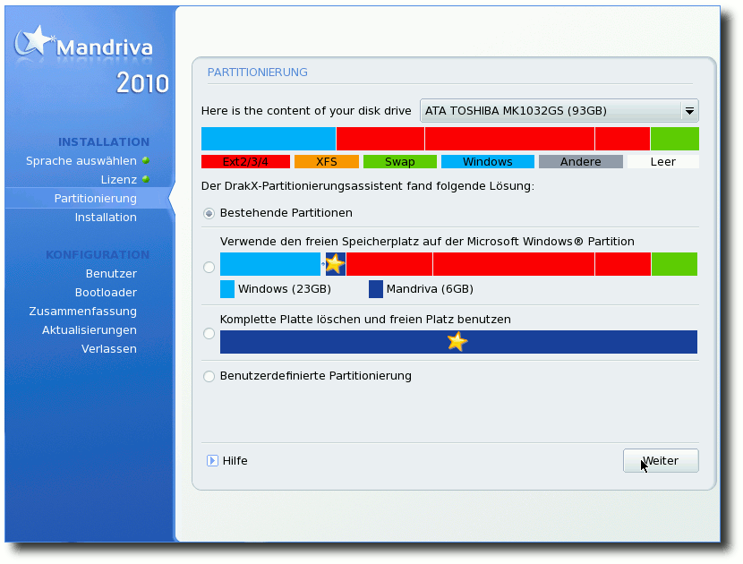
Neues Feature bei der Partitionierung.
Negativ ist bei der Installation mit der Free-DVD aufgefallen, dass
keine Liste von Spiegelservern bereitstand bzw. abgerufen werden
konnte. Es wurde lediglich die Fehlermeldung angezeigt.
Anschließend hatte man die Möglichkeit,
eine Serveradresse
anzugeben. Dabei bestand zu dem Zeitpunkt bereits eine Verbindung
zum Internet. Das war jedoch nicht weiter schlimm, da sich nach
der Installation die Quellen problemlos einrichten ließen. Bei der
Installation des Bootloaders (GRUB 0.97 mit ext4-Unterstützung)
wurde sowohl Windows als auch das zweite Linux-System auf dem
Rechner erkannt.
Positiv ist zu erwähnen, dass nach der Installation der One-CD ein
Dialog erscheint, der anbietet, nicht benötigte Sprachpakete
und Treiber zu deinstallieren. Obwohl in diesem Fall keine
Probleme auftraten, sollte man bei diesem Schritt
stets vorsichtig sein
und sich die Liste der zu entfernenden Pakete gut ansehen.
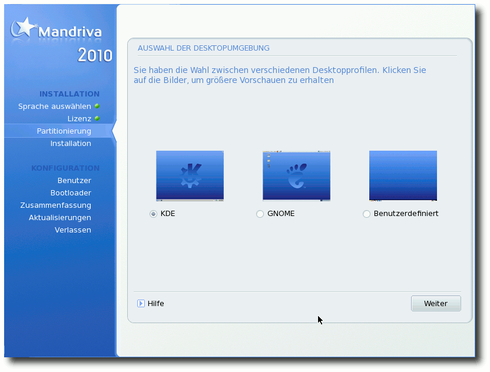
Auswahl der Desktopumgebung.
Beim ersten Neustart nach der Installation wird noch der Benutzer
eingerichtet und ein Root-Passwort festgelegt. Anschließend
erscheint ein Wizard, der ein paar Fragen stellt und
bittet, die Hardwareliste an Mandriva zu senden. Leider ist der
„
Cancel“-Button etwas versteckt am unteren rechten Rand.
Wer die Umwelt schonen will oder kein optisches Laufwerk besitzt,
kann sich sowohl die Live-CD als auch die Free-DVD auf einen
USB-Stick schieben. Als Hilfsmittel dazu wird
Mandriva-Seed
[6]
angeboten. Mandriva-Seed gibt es als Windows- und als Linux-Version
und macht das Aufspielen auf Sticks kinderleicht.
Erscheinungsbild und erster Eindruck
Nach der Installation startet Mandriva erfreulich zügig. Vor allem
fiel der schnelle Start von KDE auf. Dauerte das Starten von KDE in
früheren Versionen etwa eine halbe Minute, so braucht KDE jetzt nur
noch wenige Sekunden, bis es in voller Pracht erscheint. Als Erstes
fällt dabei auf, dass neben den angelegten Benutzern auch ein
Gast-Account vorhanden ist. Dieser erlaubt Gästen einen
passwortlosen Zugang, allerdings werden alle Daten nur temporär in
einem tmpfs-Dateisystem angelegt und nach dem Abmelden wieder
gelöscht. Wer sich an dem Gast-Zugang stört, kann ihn jedoch im
Mandriva Control Center deaktivieren.
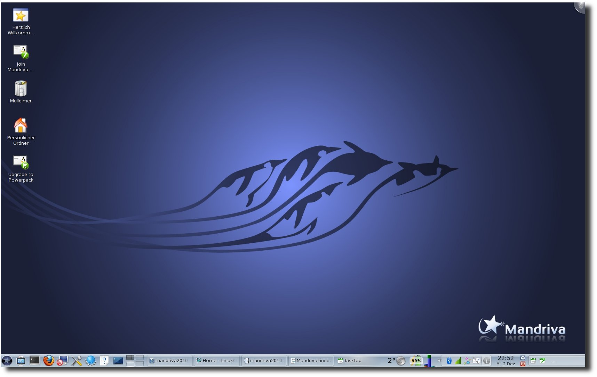
Mandriva Free mit KDE.
In der neuen Version präsentiert sich Mandriva aufgeräumt und klar.
Mandriva kommt je nach Edition in einem unterschiedlichen Theme.
One und Powerpack ähneln sich dabei sehr. Das Theme der Free-Version
präsentiert sich dagegen unterschiedlich. Innerhalb der Testdauer
wurde nichts am Standardaussehen verändert, was auch daran liegt,
dass an den Hauptkritikpunkten des Designs gearbeitet wurde. Unter
KDE wird jetzt ein eigenes Plasma-Theme verwendet. Außerdem wurde die
Fensterdekoration „Ia-Ora“ überarbeitet. Auch wenn „Ia-Ora“ immer
noch nicht überwältigend schön ist, so wirkt es zumindest nicht
mehr wie ein Fremdkörper. Das eigene Plymouth-Theme wirkt in allen
Versionen gefällig, ohne verspielt zu sein. So lässt sich
eigentlich das gesamte Erscheinungsbild von Mandriva zusammenfassen.
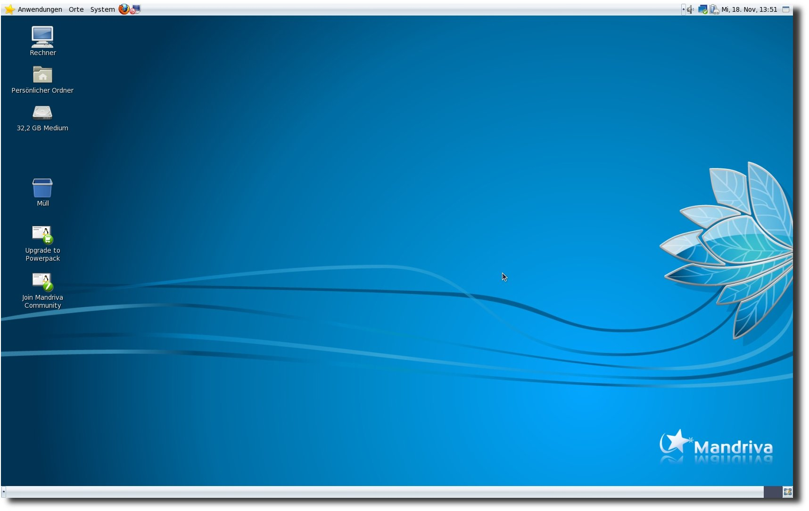
Mandriva One mit GNOME.
Die unterschiedlichen Desktopumgebungen wurden gleichermaßen
angepasst, sodass auch alle Programme, gleich mit welchem Toolkit,
sich in die unterschiedlichen Umgebungen gut einpassen.
OpenOffice.org nutzt zudem unter KDE das Oxygen-Icon-Theme, um eine
bessere Integration zu erreichen. Bei der One war das Abspielen von
MP3s und das Ansehen von YouTube-Videos sofort möglich. Die gesamte
Hardware der Testrechner wurde sofort erkannt und richtig
konfiguriert. LAN, WLAN, Grafik und selbst Bluetooth funktionierte
auf Anhieb. Der eingebaute Kartenleser arbeitet ebenfalls zur
vollsten Zufriedenheit.
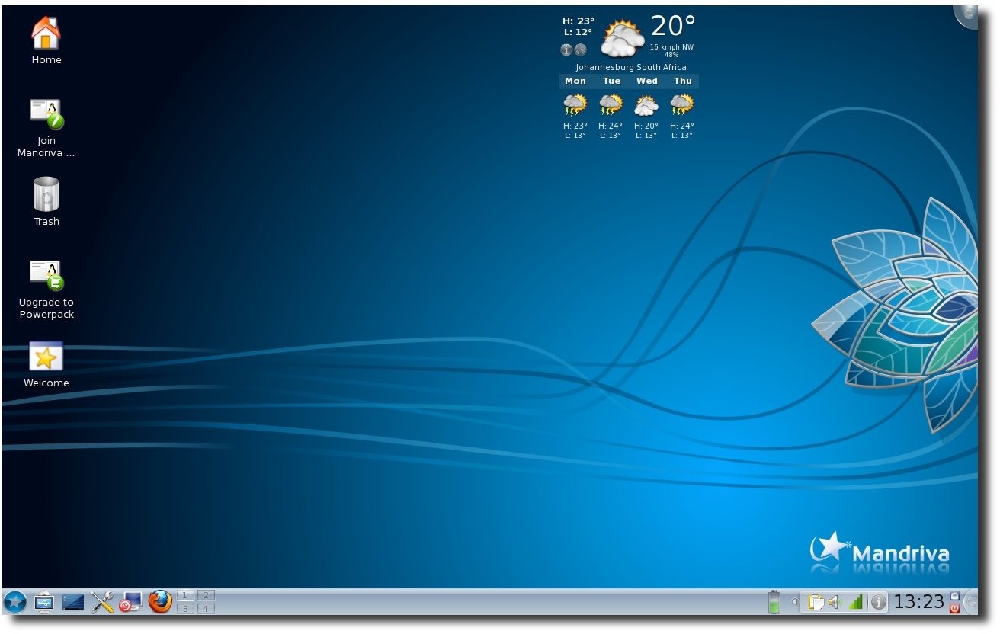
Mandriva Powerpack mit KDE.
Das komplette System mit seinen Tools arbeitet zügig und schnell.
Auch die Softwareverwaltung hat an Geschwindigkeit zugelegt, und da
die wichtigsten Quellen bereits eingerichtet sind, kann direkt
losgelegt werden.
Das Einzige, was den positiven Gesamteindruck etwas trübte, war eine
falsche Upgrade-Meldung, die anbot, ein Upgrade auf Mandriva Linux
2009.1 durchzuführen. Ein Update behob dieses Problem jedoch.
Mandriva verwalten
Ein großes Plus von Mandriva Linux war und ist seit jeher das
Mandriva Control Center. Alle administrativen Aufgaben lassen sich
dort erledigen, wobei in der Standardkonfiguration vor allem
Werkzeuge für Endanwender vorhanden sind. Installiert man
entsprechende Pakete nach, stehen aber umfangreiche Werkzeuge zum
Einrichten unterschiedlicher Server bereit.
Softwareverwaltung
Die Softwareverwaltung ist zweifellos eine der wichtigsten Werkzeuge
im Leben eines Linuxsystems. Im Falle von Mandriva ist es URPMI
bzw. die grafische Oberfläche Rpmdrake. Alles Wichtige dazu findet
sich im Mandriva Control Center in der Rubrik „
Software verwalten“.
Hier müssen zuerst in der Quellenverwaltung die benötigten
Softwarequellen eingerichtet werden. Wählt man rechts „
Hinzufügen“,
hat man die Möglichkeit, einen vollständigen Quellen-Satz
oder nur Update-Quellen hinzuzufügen. Wählt man ersteres, werden
alle offiziellen Quellen (Main, Contrib, Non-Free, Backports,
Testing mit ihren
jeweiligen Update-Quellen) eingerichtet, wobei
nur die ersten drei mit den Update-Quellen aktiviert werden. Dabei
wird jedoch kein spezieller Server gewählt, sondern die MIRRORLIST
verwendet. Mit der MIRRORLIST wird vor jeder Aktion von URPMI ein
Server ausgesucht, der aktuell ist und eine gute Verbindung
erlaubt. Möchte man jedoch einen speziellen Server verwenden, kann
man über das Menü „
Datei Pfeil rechts Add a specific media mirror“ einen aus
einer Liste wählen. Alternativ kann man auch den Service
SmartUrpmi
[7] der deutschen
Mandriva-Community nutzen. Dieser bietet zudem eine erweiterte
Quellen-Auswahl. In den PLF-Quellen finden sich einige
Extras wie
libdvdcss, einige Codecs, lame und vieles mehr.
Rpmdrake als grafische Oberfläche bieten zudem einige Extras, die
hier kurz erwähnt werden sollen. Über die Drop-Down Menüs in der
linken oberen Ecke kann das Suchergebnis beeinflusst werden. Hier
kann eingestellt werden, ob nur nach Paketen mit grafischer
Oberfläche gesucht oder ob nur Metapakete angezeigt werden sollen.
Drückt man auf das Lupen-Symbol in der Suchleiste, kann man wählen,
wo gesucht werden soll, also ob beispielsweise nur in den
Paketnamen gesucht werden soll oder in den gesamten Dateilisten der
einzelnen Pakete.
Über das „
Ansicht“-Menü kann man die Kategorie
wählen, die im linken Teil des Fensters angezeigt wird.
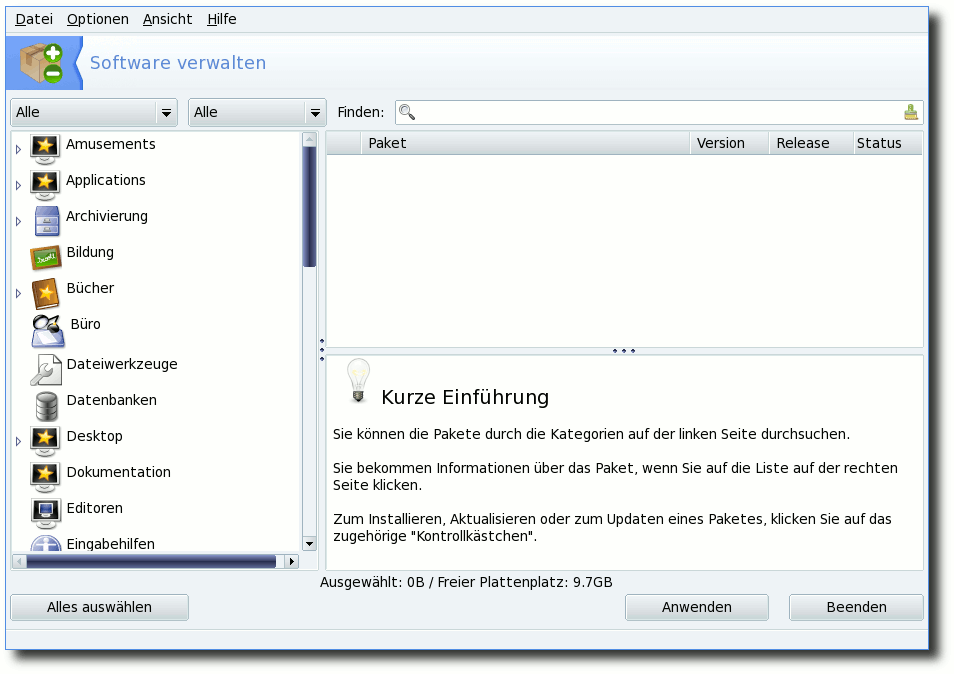
Mandrivas Softwareverwaltung Rpmdrake.
Neu seit der Version 2010 ist die Möglichkeit, die regelmäßige
Überprüfung nach Updates zu konfigurieren. Hier lässt sich die
Frequenz wählen und wann der erste Check nach dem Systemstart
stattfinden soll.
Über die Konsole hat man die Möglichkeit, verwaiste Pakete zu
entfernen. Dazu muss man den Befehl
ausführen. Hier gilt jedoch besondere Vorsicht: Entfernt man zum
Beispiel das Metapaket
task-kde, wird die gesamte KDE als
verwaist dargestellt. Möchte man einzelne Pakete als nicht-verwaist
markieren, so muss man sie lediglich mit
urpmi aufrufen. Das
Paket wird dann nicht erneut installiert, sondern nur als manuell
installiert markiert und ist somit nicht mehr verwaist.
Hardwareeinrichtung
Auch bei der Einrichtung der Hardware unterstützt einen das Mandriva
Control Center. Wer die Free-Version zur Installation nutzt, will
vielleicht den proprietären Treiber für die Grafikkarte
nachinstallieren und verwenden. Dazu wählt man in der Rubrik
„
Hardware“ den Punkt „
Grafischen Server einrichten“. An dieser
Stelle muss man nur die Einrichtung der Grafikkarte erneut
durchgehen (die Vorauswahl bestätigen) und wird am Ende gefragt, ob
man den proprietären Treiber nutzen möchte. Bejaht man diese
Frage, wird der entsprechende Treiber heruntergeladen und eingerichtet.
Das Ganze funktioniert aber auch andersherum. Will man lieber den
freien Treiber verwenden, verneint man die Frage.
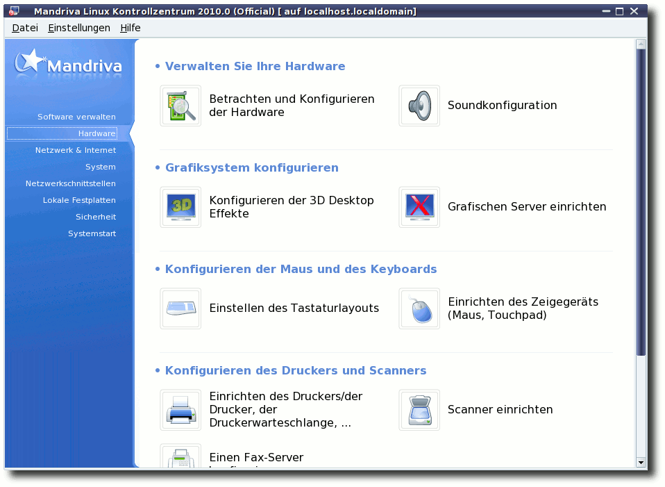
Die Hardwarerubrik im MCC.
Ähnlich komfortabel läuft die Einrichtung von kabellosen Netzwerken.
Unter „
Netzwerk & Internet“ kann man neue Schnittstellen hinzufügen.
Werden Treiber für das Gerät benötigt, werden diese heruntergeladen und
installiert. Bei der One-Edition sollten jedoch schon alle Treiber vorhanden sein.
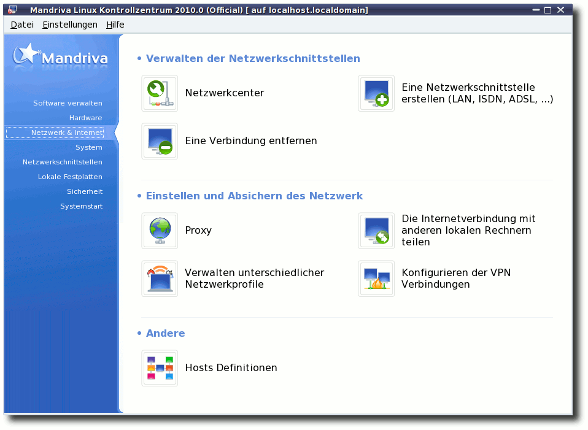
Die Netzwerkrubrik im MCC.
In der Rubrik „
Hardware“ gibt es zudem den Punkt „
Betrachten und
Konfigurieren der Hardware“. Hier kann die gesamte verbaute
Hardware angezeigt werden. Wählt man aus der Liste ein bestimmtes
Element an, kann auch ein jeweiliger Einrichtungsassistent
gestartet werden.
Weiterhin gibt es ein Sicherheitscenter, in dem sich regelmäßige Checks
einstellen lassen. Eine interaktive Firewall sowie eine
Kindersicherung sind auch dabei. Letztere bietet jetzt auch die
Möglichkeit, Benutzern den Zugang zum Internet nur in einer
bestimmten Zeitspanne zu erlauben.
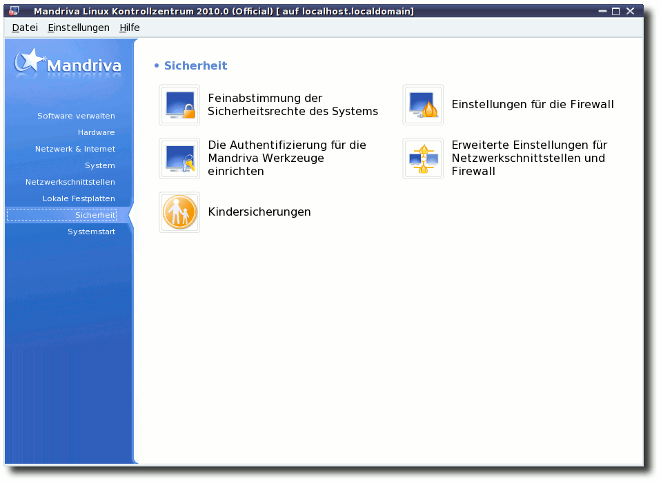
Die Sicherheitsrubrik im MCC.
Der smarte Desktop
Ja, wer hat nicht schon immer auf den smarten Desktop gewartet?
Jetzt soll er da sein. Allerdings bleibt er vorerst nur KDE-Nutzern
zugänglich. Hinter dem smarten Desktop verbirgt sich die
Integration des semantischen
Desktops
[8]
mit Nepomuk. Da Mandriva mit Sebastian Trueg einen Hauptentwickler von
Nepomuk bezahlt, wundert es wenig, dass Mandriva damit wirbt, die
erste Distribution mit der Integration zu sein. Dabei gehen die
Möglichkeiten weit über das Taggen und Kommentieren von Dateien
hinaus. In einem kleinen
Video
[9]
zeigt Mandriva auch, wie das funktionieren soll.
Zuerst musste aber das Paket
nepomuk-scribo installiert und
Nepomuk in den KDE-System-Settings aktiviert werden. Anschließend
kann man sich das „Task Management Widget“ auf den Desktop legen
oder das Programm Tasktop starten. Mit Tasktop lassen sich Aufgaben
(mit Unteraufgaben) definieren und den Aufgaben Ressourcen
zuordnen. Als Ressourcen sind
bisher Kontakte, E-Mails,
Dateien/Ordner und Webseiten möglich. Webseiten können dabei mit
zwei Klicks aus dem Konqueror heraus mit einer Aufgabe verbunden
werden. Für Dateien und Ordner gilt das Gleiche mit Dolphin.
Wer
E-Mails mit Aufgaben verknüpfen will, braucht das Paket
kmail-nepomuk, das eine veränderte Version von KMail darstellt.
Nach der Installation wird man jedoch darauf hingewiesen, dass es
sich dabei um eine Technologie-Vorschau handelt und man diese
Version auf keinen Fall für wichtige E-Mails nutzen soll. Schade
eigentlich, denn so konnten die Funktionen nur
angetestet werden.
Kontakte müssen in Tasktop komplett neu angelegt werden. Eine
Funktion zum Importieren der Kontakte aus dem KAdressbook war nicht
aufzufinden. Hat man mehrere Kontakte mit einer Aufgabe verknüpft,
kann man so eine E-Mail an alle Kontakte dieser Aufgabe schicken.
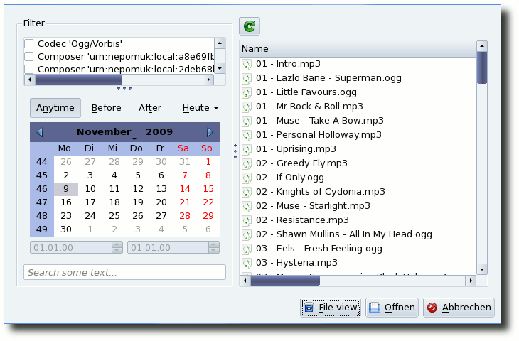
Der semantische Dateidialog.
In allen KDE-Anwendungen steht zum Öffnen und Speichern neben den
normalen Dialogen auch eine semantische Ansicht zur Verfügung.
Diese erlaubt das Suchen von Dateien anhand eines Filters und
Kalenders. Beispielsweise können damit alle Dateien anzeigt werden,
die heute bearbeitet wurden. Die Filterfunktion erwies sich dagegen
als wenig hilfreich. Es erschienen hunderte Einträge zu Nepomuk,
deren Sinn nicht ersichtlich war.
Alles in allem lässt sich mit semantischen Desktops erstmals
vernünftig arbeiten. Bei der Erstellung dieses Berichtes
haben sie sich als durchaus nützlich erwiesen. Interessante Webseiten wurden
aus dem Konqueror heraus per Mausklick mit der Aufgabe „Review
2010“ verknüpft. Bilder, Ordner und andere Dateien, die im
Zusammenhang wichtig erschienen, ebenso aus Dolphin. An einigen
Stellen hakte es jedoch noch, sodass man sich auf kommende
Versionen freuen kann.
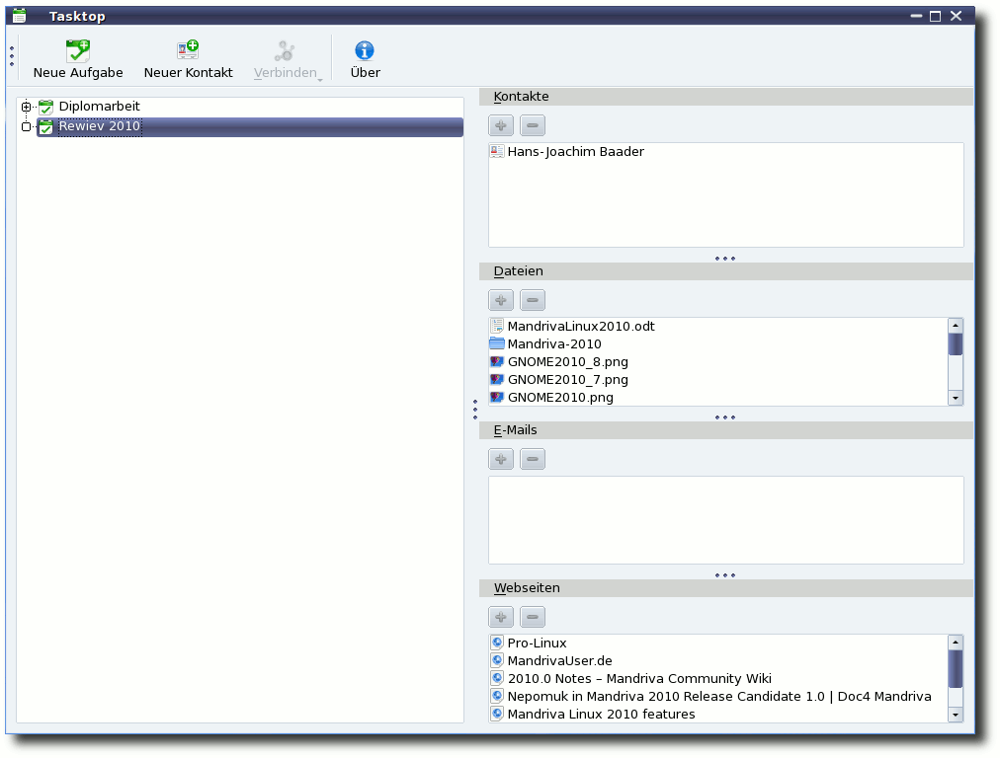
Tasktop zum Verwalten von Aufgaben.
Ausblick auf GNOME3
GNOME kommt in der aktuellen Version 2.28. Auch wenn in diesem
Artikel der Fokus auf KDE liegt, soll GNOME nicht vergessen werden.
Mandriva wird oftmals als KDE-Distribution bezeichnet. Das liegt
zum einen an der sehr guten Integration von KDE und zum anderen an
den Nutzern. Laut Umfrage im offiziellen Mandriva-Forum nutzen ca. 75 %
aller Nutzer Mandriva mit KDE. Dennoch gibt sich Mandriva
jedes Mal viel Mühe, GNOME mit Erfolg auf einen gleichwertigen Level
zu bringen. Fensterdekoration und Hintergrund sind die gleichen wie
in KDE. Die Menüs sind aufgeräumt und gut sortiert. Lediglich das
verwendete Icon-Theme ist wenig gefällig.
In GNOME 2.28 ist mit Zeitgeist
[10] und
GNOME Shell
[11] ein Ausblick auf GNOME3
dabei. Durch den Aufruf des Befehls
wird die GNOME-Shell gestartet. Über das Konzept hinter der
GNOME-Shell mit den Aktivitäten wurde in letzter Zeit genug
geschrieben. Im Test hat es gut funktioniert, war leicht zu
verstehen und die Effekte liefen flüssig. Lediglich beim
ersten
Öffnen des Programm-Menüs gab es ein paar Sekunden Verzögerung.
Insgesamt war der Eindruck sehr positiv und man darf auf die weitere
Entwicklung gespannt sein, schließlich vergeht bis GNOME3 noch
fast ein Jahr.
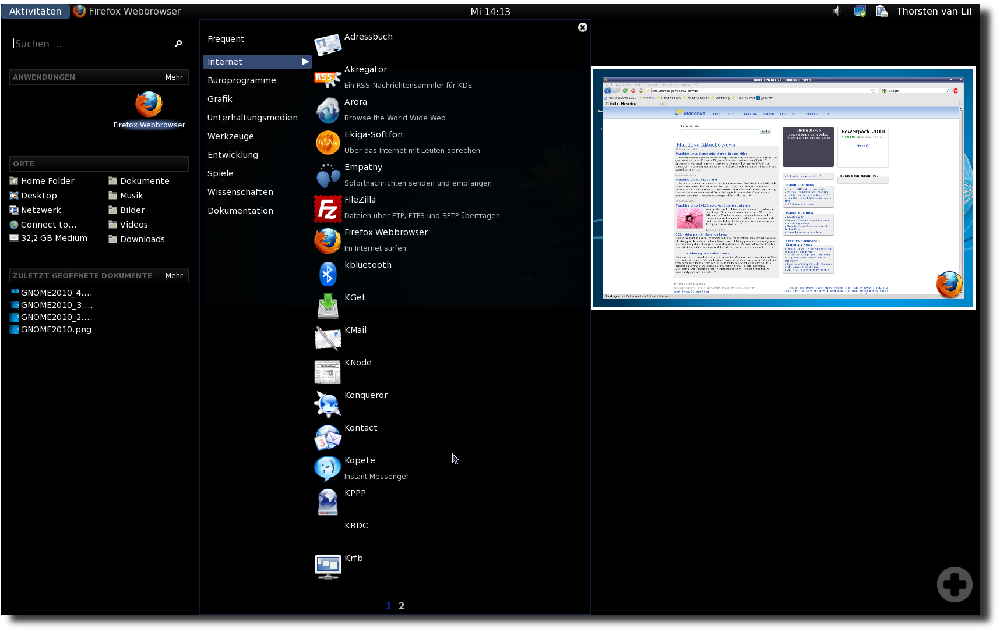
GNOME Shell.
Weitere Oberflächen
Neben GNOME und KDE kommt Mandriva mit vielen weiteren Oberflächen.
Xfce und LXDE
gehören ja schon zum guten Ton. Daneben gibt es noch
für alle Netbook-Besitzer Sugar und Moblin. Mit dem jeweiligen
Metapaket (
task-sugar bzw.
task-moblin) sind die Umgebungen
schnell installiert. Dabei beißen sich allerdings die Pakete von
mutter und
moblin-mutter, sodass man die GNOME Shell nicht
parallel zu Moblin installiert haben kann.
Moblin selbst bietet eine ansprechende und leicht verständliche
Oberfläche. Auch das Netzwerk-Center funktionierte im Test
problemlos, sodass mit wenigen Klicks eine WLAN-Verbindung
erstellt werden konnte. Allerdings stellt einen das Verlassen der
Oberfläche vor eine Herausforderung: Es gab keine Möglichkeit, sich
abzumelden, auch die Tastenkombination zum Neustarten des X-Servers
brachte keinen Erfolg. Der Wechsel auf die Konsole per
Tastenkombination klappte jedoch.
Mandriva hat angekündigt, dass nach dem Erscheinen von Moblin 2.1
auch wieder eine Mandriva-Moblin-Live-CD erscheinen wird, doch bis
jetzt ist das nicht geschehen.
Der Härtetest
Wie bereits angekündigt, wurde für den Test Mandriva Linux 2010 mit
der KDE-Live-CD auf einem Desktop-PC mit 512 MB Arbeitsspeicher
installiert. Die Installation selbst war, wie zu erwarten, sehr
zähflüssig. Der Bootvorgang dauerte bereits mehrere Minuten und
endete auf der Konsole. Die verbaute GeForce-4-Grafikkarte wurde
zwar korrekt erkannt und mit dem proprietären Treiber eingerichtet,
doch dieser scheint hier Probleme zu verursachen. Nach dem Wechseln
zum freien Treiber über das Tool
XFdrake startete KDE problemlos,
wenngleich auch das weitere Minuten brauchte. Nach dem Start wurden
nicht benötigte Hintergrundprogramme wie
draksnapshot beendet, um
den Platz im Arbeitsspeicher frei zu machen.
Anschließend ließ sich die Installation starten und verlief
reibungslos. Nach der Installation ließ sich mit dem Rechner
überraschend gut arbeiten. Der Startvorgang in KDE4 mit allen
Hintergrundprogrammen dauerte ziemlich genau 60 Sekunden. Nach dem
Start waren dabei etwa 30 % des Arbeitsspeichers belegt, also etwa
180 MB. Nach dem Start von Amarok, Firefox und OpenOffice.org waren
jedoch auch schon über 45 % des Arbeitsspeichers belegt. Das
Navigieren mit Dolphin auch in Ordnern mit vielen Dateien verlief
zügig. Programme wie OpenOffice.org und Firefox brauchten für den
Erststart wenige Sekunden.
Zusammenfassend lässt sich also sagen, dass 512 MB Arbeitsspeicher
genug ist für eine volle Installation mit KDE4. Als Installationsweg
empfiehlt sich jedoch eher die Free-DVD und weniger die Live-CD.
Die Community
Die Gemeinschaft der Mandriva-Nutzer
[12]
ist im deutschsprachigen Raum eher etwas kleiner, aber dafür an
einer Stelle zentriert. Dort findet sich neben einem aktiven
Forum
[13], ein Wiki
[14],
Newsportal
[15], Spiegel-Server
und ein eigenes Paket-Repository. Zu dem Angebot haben sich
vor wenigen Wochen auch eine
Netbook-Edition
[16] und eine
LXDE-Edition
[17] gesellt.
Fazit
Mandriva Linux 2010 hat sich innerhalb der letzten Wochen als gut
durchdachtes und leicht zu bedienendes System erwiesen. Das System
arbeitet schnell und wirkt trotz KDE4 leicht und spritzig. Es hat
große Freude bereitet, das System zu nutzen und negative Punkte
müssen wirklich gesucht werden, aber es gibt sie. Dazu zählen die
falsche Upgrade-Meldung (was aber mit einem Update behoben wurde)
und die eine oder andere fehlende Übersetzung. Alles in allem ist
Mandriva Linux 2010 aber eine rundum gelungene Version, die ich
jedem nur empfehlen kann. Die Berichte über Mandriva 2010, die
bisher veröffentlicht wurden, sind ähnlich positiv, sodass jeder,
der gerade auf der Suche nach einer neuen Distribution ist, sich
Mandriva ansehen sollte.
Seit Mandriva Linux 2009.0 hat sich somit Mandriva mit jeder Version
deutlich gesteigert. Man darf also gespannt sein, wo die Reise noch
hingeht.
Links
- http://wiki.mandriva.com/de/2010.0_Notes
- http://www.pro-linux.de/NB3/artikel/2/360/mandriva-linux-2010.html
- http://www.gnu.org/copyleft/fdl.html
- http://www2.mandriva.com/linux/which/
- http://go-oo.org/
- ftp://ftp.mandrivauser.de/mandriva_isos/2010.0
- http://www.mandrivauser.de/smarturpmi
- http://doc4.mandriva.org/bin/view/labs/Nepomuk-mdv2010-RC
- http://www.dailymotion.com/video/xbc6a2_nepomuk-semantic-desktop-under-mand_tech
- http://live.gnome.org/Zeitgeist
- http://live.gnome.org/GnomeShell
- http://www.mandrivauser.de/
- http://www.mandrivauser.de/forum
- http://www.mandrivauser.de/doku/doku.php
- http://www.mandrivauser.de/wordpress/
- http://www.mandrivauser.de/wordpress/?p=443
- http://www.mandrivauser.de/wordpress/?p=454
| Autoreninformation |
| Thorsten van Lil
nutzt Mandriva privat seit 2007. Er ist verantwortlich
für das offizielle deutsche Mandriva-Wiki und ist darüber hinaus
Administrator des MandrivaUser-Newsportals.
|
| |
Diesen Artikel kommentieren
Zum Index
von Mathias Menzer
Basis aller Distributionen ist der Linux-Kernel, der
fortwährend weiterentwickelt wird. Welche Geräte in einem halben
Jahr unterstützt werden und welche Funktionen neu hinzukommen,
erfährt man, wenn man den aktuellen Entwickler-Kernel im Auge
behält.
Linux 2.6.33
In unter drei Monaten und nach nur acht Vorabversionen veröffentlichte Torvalds Ende Februar noch den Kernel 2.6.33
[1]. Der trotz Weihnachtszeit und des Jahreswechsels vergleichsweise schnell fertiggestellte Neuling der Linux-Kernel-Reihe kann dennoch mit bedeutenden Neuerungen aufwarten. So befindet sich der freie Treiber „Nouveau“ für NVIDIA-Grafik-Chipsätze nun im Kernel. Er wurde mittels Reverse Engineering ohne Hilfe von NVIDIA entwickelt, bietet jedoch bereits gute 2-D-Unterstützung und eine eingeschränkte 3-D-Beschleunigung. Die Arbeiten daran laufen weiter, unter anderem mit dem Ziel, die Abhängigkeit von der Firmware
ctx_voodoo zu entfernen. Die Nouveau-Entwickler erhoffen sich eine bessere und längerfristige Unterstützung von Grafikhardware, da Anwender unterstützter Karten nun nicht mehr allein auf das Wohlwollen des Herstellers angewiesen sind.
Ebenfalls populär war die Aufnahme des Kernel-Moduls von DRBD (Distributed Replicated Block Device). Diese Software ermöglicht die Replikation eines Blockspeichergerätes über das Netzwerk auf andere Systeme. Damit lassen sich zum Beispiel Partitionen erstellen, die auf mehreren Servern synchron gehalten werden und somit beim Ausfall eines Systems noch zur Verfügung stehen - sei es durch einen Festplattendefekt, eine Störung des Netzwerks oder sonstige Ausfälle bedingt.
Etwas Schutz vor bösen Absichten sollen „TCP Cookie Transactions“ (TCPCT) bieten - eine Erweiterung des TCP-Protokolls, die die Wirksamkeit von Denial-of-Service-Attacken vermindert. Dabei wird beim Verbindungsaufbau ein Cookie mitgesendet, mit dessen Hilfe auf der Gegenseite eben jener Verbindungsaufbau ohne die Nutzung weiterer Ressourcen durchgeführt werden kann. Ebenso werden direkt nach Beendigung der Verbindung Ressourcen auf dem Server wieder freigegeben.
Auch von ReiserFS gibt es wieder etwas zu hören. Allerdings von der etwas älteren Version 3, die bislang immer noch Gebrauch vom Big Kernel Lock (BKL) machte. Diese mittlerweile veraltete Variante zur Verhinderung gleichzeitiger Zugriffe auf den Kernelspace sperrt den gesamten Kernel, im Gegensatz zur aktuellen Methode, nur einzelne Zweige zu sperren. ReiserFS machte hiervon exzessiv Gebrauch und erleichterte es den Entwicklern dadurch nicht gerade, ihm den BKL auszutreiben. Sie bedienten sich daher rekursiver Locks (mehrfacher Sperren durch einen einzigen Thread). Dies wird auch nicht als saubere Lösung gesehen, allerdings hätte eine Implementierung aktueller Sperrmechanismen ein Umschreiben großer Teile von ReiserFS erfordert.
Auch diesmal ist die Anzahl der Änderungen wieder zu groß, um sie alle beschreiben zu können. Spieler und Bastler können sich über die Unterstützung für Sonys Wii und Nintendos Gamecube freuen, Entwickler über weitere Werkzeuge zur Leistungsmessung des Kernels. Der Radeon-Treiber wurde verbessert und arbeitet nun auch mit R6xx- und R7xx-Modellen, neue Treiber kamen in allen Bereichen hinzu. Eine umfassende, englischsprachige Auflistung bietet Kernelnewbies
[2].
Android fliegt raus
Seit 2.6.33 sind die Android-spezifischen Anpassungen nicht länger im Linux-Kernel enthalten. Einmal mehr betonte der Verwalter des staging-Zweiges, Greg Kroah-Hartman, „
staging ist kein Abladeplatz für ungepflegten Code“ und warf die entsprechenden Treiber kurzerhand raus
[3]. Android nutzt ein anderes Verfahren zum Sperren genutzter Bereiche im Kernelspace und verfügt auch über ein abweichendes Sicherheitsmodell, wodurch zusätzliche Anpassungen benötigt werden, damit Android-Treiber in den Linux-Kernel aufgenommen werden könnten. Leider machte Google bislang keine Anstalten, um diese notwendigen Änderungen vorzunehmen. Nachdem Jan Wildeboer nun einen Fork des Kernels
[4] befürchtete, kam wieder Leben in das Thema. In einem Interview mit Linux-Magazin ließ Kroah-Hartman durchsickern, dass Google die Zusammenarbeit mit den Entwicklern des Mainstream-Kernels aufnehmen möchte und auch das Sicherheitsmodell von Android überarbeiten wolle
[5].
Optimierungen für den Desktop
Auch Con Kolvias, der ein ausgeprägtes Faible für Scheduler hat, meldet sich zurück - mit einem umfassenden Satz an Patches für den Kernel 2.6.33, der sich auf die Leistung des Kernels auf einem Desktop-System positiv auswirken soll
[6]. So findet sich darin unter anderem der von ihm erdachte Brain Fuck Scheduler (BFS), mit dem er sich im September vergangenen Jahres nach zweijähriger Pause wieder bei der Kernel-Entwicklergemeinde zurückmeldete (siehe „Der September im Kernel-Rückblick“,
freiesMagazin 10/2009
[7]). BFS nutzt die Ressourcen auf Systemen mit vier oder weniger Prozessoren besser als der derzeit verwendete Completely Fair Scheduler (CFS). Weitere enthaltene Patches verringern Latenzzeiten oder optimieren das Swap-Verhalten.
Ksplice
Eine Methode, um Kernelaktualisierungen ohne Neustart des Systems zu installieren, stellt Ksplice dar (siehe „Kernel-Rückblick“,
freiesMagazin 05/2008
[8]). Das am MIT (Massachusetts Institute of Technology)
[9] entwickelte Verfahren wird nun durch das Unternehmen Ksplice
[10] als Dienstleistung namens „Ksplice Uptrack“ vertrieben. Dabei stellt Ksplice angepasste Aktualisierungen bereit, die per Abonnement durch ein auf dem System installierten Programm heruntergeladen und als Modul zur Laufzeit in den Kernel eingehängt werden. Während das Abonnement für Red Hat Enterprise Linux, CentOS, Debian und Ubuntu 8.04 LTS kostenpflichtig ist, steht es Anwendern von Ubuntu 9.04 und 9.10 kostenfrei zur Verfügung
[11].
Was kostet Linux?
Linux ist Freie Software. Dass damit nicht frei im Sinne von Freibier gemeint ist, darauf wies schon Richard M. Stallman hin. Eine Forschungsgruppe an der Universität von Oviedo (Spanien) hat diese Aussage nun mit harten Zahlen untermauert
[12]. Die Forscher ermittelten nach dem Constructive Cost Model (COCOMO)
[13] den Wert des Kernels 2.6.30 mit über einer Milliarde Euro. Bei einer Entwicklungszeit von 14 Jahren würden von Anfang an 985 Personen an der Kernel-Entwicklung mitarbeiten müssen. Die Forscher weisen darauf hin, dass die verwendeten Kostenmodelle der Komplexität der Open-Source-Software-Entwicklung nicht ganz gerecht werden, da hier Code beständig einfließt, aber auch wieder entfernt wird. Dies würde ein Überdenken dieser Modelle erfordern, um zum Beispiel auch die Wiederverwendung und Weiterentwicklung des Codes zu berücksichtigen
[14].
Links
- http://lkml.org/lkml/2010/2/24/301
- http://kernelnewbies.org/Linux_2_6_33
- http://www.pro-linux.de/NB3/news/1/15260/android-und-der-linux-kernel.html
- http://jan.wildeboer.net/2010/02/is-google-forking-the-linux-kernel/
- http://www.linux-magazin.de/NEWS/Video-Android-und-der-Linux-Kernel
- http://www.linux-community.de/Internal/Nachrichten/Con-Kolivas-meldet-sich-mit-Patchset-fuer-2.6.33-zurueck
- http://www.freiesmagazin.de/freiesMagazin-2009-10
- http://www.freiesmagazin.de/freiesMagazin-2008-05
- http://mit.edu/
- http://www.ksplice.com/
- http://www.pro-linux.de/NB3/news/1/15293/ksplice-uptrack-ermoeglicht-kernel-updates-ohne-neustart.html
- http://www.pro-linux.de/NB3/news/1/15350/was-kostet-die-entwicklung-des-kernels-2630.html
- http://de.wikipedia.org/wiki/COCOMO
- http://iri.jrc.ec.europa.eu/concord-2010/posters/Garcia-Garcia.ppt
| Autoreninformation |
| Mathias Menzer
wirft gerne einen Blick auf die Kernel-Entwicklung, um mehr über die
Funktion von Linux zu erfahren. |
| |
Diesen Artikel kommentieren
Zum Index
von Ralf Hersel
Die Arbeitsoberfläche der Linux Desktops ist von Haus aus eine Wüste,
die zu 5 % aus Panels, Menüs und Startern besteht und zu 95 % ein
Hintergrundbild ohne weitere Information oder Funktion zeigt. Viele
Anwender sind mit diesem Zustand zufrieden, andere wünschen sich mehr
Inhalt auf der Oberfläche. In diesem Artikel werden Maßnahmen beschrieben, um
den Informationsgehalt des Desktops zu erhöhen und ihn optisch
ansprechender zu gestalten.
Status quo
Die grafische Benutzeroberfläche wurde ab 1973 von der Firma Xerox mit
dem Xerox Alto erfunden. Zu einem kommerziellen Erfolg wurde jedoch
erst der Xerox Star
[1] im Jahr 1981. Die Oberfläche des Xerox Star
zeigt die wesentlichen Elemente des Konzepts: grafische Darstellung,
Anwendungen in eigenständigen Fenstern, Icons als Links auf
Anwendungen, Verzeichnisse oder Dateien. Der Xerox Star verdeutlicht
die Schreibtisch-Metapher: Es liegen geöffnete Briefe herum, es gibt
Posteingangs- und -ausgangskorb, einen Papierkorb, Taschenrechner und
Drucker sowie Ordner für die verschiedenen Dokumententypen.
In den vergangenen 30 Jahren hat sich an diesem Grundkonzept nicht
viel verändert. Seien es die Apple-, Windows- oder Linux-Desktops, im
Grunde genommen sieht es immer noch aus wie damals. Auf einem modernen
Desktop, wie z. B. GNOME, ist von der Schreibtisch-Metapher nicht mehr
viel übrig geblieben. Der Schreibtisch ist so gut wie leer; lediglich
der Papierkorb ist noch vorhanden, versteckt sich aber rechts unten im
Panel. Der Grund für das Verschwinden der ursprünglichen
Desktopelemente liegt auf der Hand - ein geöffnetes Dokument oder
Programm
verdeckt in der Regel große Teile des Schreibtischs und damit
auch die nützlichen Helferlein. Im Panel sind diese Elemente jedoch auch bei
maximierten Programmfenstern jederzeit erreichbar.
Folgt man den Forendiskussionen zu diesem Thema
[2], so
besteht hier kein Handlungsbedarf. Die meisten Anwender sind mit dem
Desktop zufrieden. Die Minimalisten unter ihnen bevorzugen einen
aufgeräumten Schreibtisch, auf dem fast nichts herumliegt. Bei der
anderen Fraktion ähnelt der Desktop einem Schachbrett voller Starter
und Dokumentenicons.
Wer jedoch mehr Informationen auf seiner grafischen Oberfläche haben
möchte, für den
bieten die aktuellen Linux-Desktops kleine
Applikationen, sogenannte Applets. Bei KDE heißen sie Plasmoide;
bei GNOME gibt es die GDesklets und die Screenlets
[3]. Mit ihnen lässt sich der
Informationsgehalt des Desktop erweitern.
Mehr Infos
Als Beispiele für informative Applets unter Ubuntu mit GNOME-Oberfläche
dienen das Clear-Weather-Screenlet und das Feed-Reader-Screenlet. Bevor diese
eingerichtet werden können, muss man das Paket
screenlets
wie gewohnt über das Software-Center installieren.
Nach der Installation kann die Screenlet-Verwaltung
aus dem Menü „
Zubehör“ gestartet werden.
Diese Verwaltung gibt einen Überblick über die verfügbaren Screenlets,
erlaubt das Starten und Stoppen sowie das Konfigurieren der
ausgewählten Screenlets. Außerdem kann über das Internet
[4] die Sammlung erweitert werden. Wer
möchte, kann die Screenlets seiner Wahl einmalig starten oder per
Eintrag in die Startprogramme bei jedem Sitzungsstart automatisch auf
den Desktop bringen.
Die Wettervorhersage (Clear-Weather-Screenlet) geht über den
Standard-Wetterbericht im GNOME-Panel hinaus, indem auch Informationen
zur Tag-/Nachttemperatur, der Luftfeuchtigkeit und dem
voraussichtlichen Wetter der nächsten Tage angezeigt werden. Der
wesentliche Aspekt ist jedoch die permanente Anzeige auf dem Desktop;
im Gegensatz dazu müssen die Wetterinformationen aus dem GNOME-Panel
immer aktiv geöffnet werden. Das ist als grundsätzlicher Vorteil der
Applets zu sehen - Informationen können im Vorübergehen konsumiert werden;
es muss kein Programm gestartet werden.
Bevor das Wetter für den eigenen Standort angezeigt wird, muss man in
den Einstellungen des Clear-Weather-Screenlets die lokale Position
angeben. Diesen sogenannten ZIP-Code findet man auf der Seite
von weather.com
[5].
Dort kann nach dem Namen der Stadt gesucht
werden, worauf der gesuchte ZIP-Code als Teil der URL angezeigt wird.
Bei der Stadt Zürich sieht die URL von weather.com so aus:
http://www.weather.com/weather/today/Zurich+Switzerland+SZXX0033?from=enhsearch.
Der ZIP Code lautet
SZXX0033 und wird im Feld „
ZIP“ bei den
Einstellungen des Clear-Weather-Screenlets erwartet.
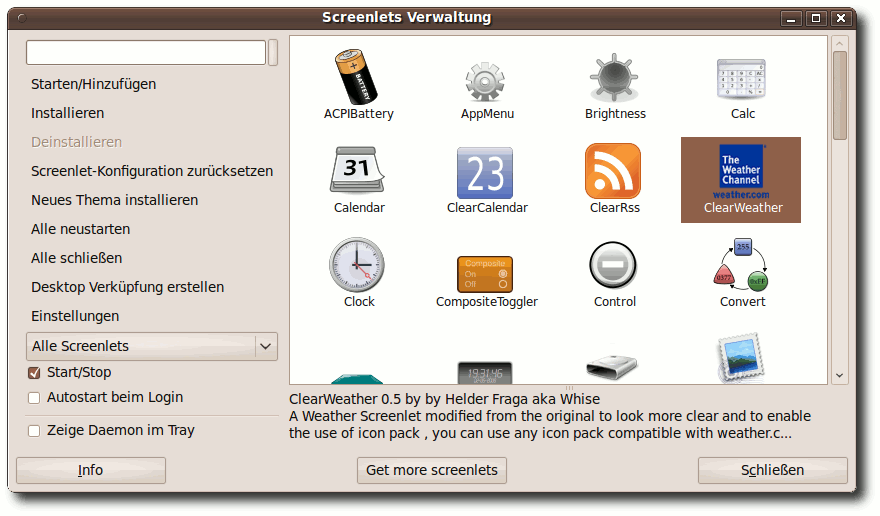
Screenlet-Verwaltung.
Ein weiteres Beispiel für die Erhöhung des Informationsgehalts des
Desktops ist das Feed-Reader-Screenlet. Mit ihm kann ein RSS-Feed
abonniert werden. Das Screenlet zeigt die Überschriften der Feeds an,
öffnet beim Darüberfahren mit der Maus den Kurztext der Nachricht und
beim Klicken die zugehörige Internetseite. Möchte man mehrere
Feeds im Auge behalten, so können weitere Instanzen des Feed-Reader-Screenlets
gestartet und auf dem Desktop angeordnet werden.
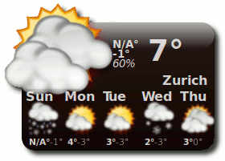
Clear-Weather-Screenlet.
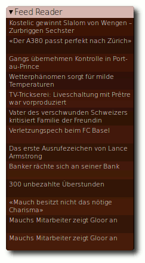
Feed-Reader-Screenlet.
Die beiden vorgestellten Screenlets beziehen ihre Informationen aus
dem Internet, somit ist eine Internetverbindung erforderlich, um keine
leeren Screenlets auf dem Desktop zu haben. Was sich trivial und
selbstverständlich anhört, birgt eine kleine Tücke: Beim Starten
erwarten die Screenlets eine bestehende Internetverbindung, ansonsten
zeigen sie keinen Inhalt an. Wer nun zu Hause oder unterwegs seinen
Zugang zum Internet über WLAN herstellt, wird feststellen, dass es
einige Sekunden dauert, bis eine Verbindung aufgebaut wird. In dieser
Zeit sind alle Screenlets gestartet und haben natürlich keine
Verbindung zum Internet bekommen. Das ist nicht sehr schön, zumal die
Screenlets erst nach einigen Minuten ein Update des Inhalts holen;
solange bleiben sie leer.
Abhilfe schafft hier ein Skript, welches die Screenlets erst dann
startet, wenn eine Internetverbindung besteht. Hierzu gibt es eine
korrekte, aber komplizierte Lösung und eine Quick-and-Dirty-Lösung. Bei
der korrekten Lösung wartet ein Skript solange, bis tatsächlich eine
Internetverbindung besteht, bevor die Screenlets gestartet werden. Die
einfachere Lösung wartet ein paar Sekunden und startet die Screenlets
dann.
#!/bin/bash
# wait until internet is up
# before screenlets are started
sleep 12
python -u /usr/share/screenlets/ClearWeather/ClearWeatherScreenlet.py &
python -u /usr/share/screenlets/FeedReader/FeedReaderScreenlet.py
|
Listing: start-screenlets.sh
Zuerst wird zwölf Sekunden lang gewartet - das ist ein
Erfahrungswert, den jeder für seinen PC ermitteln muss. In den
nachfolgenden Zeilen werden die beiden Screenlets gestartet.
Wichtig ist, dass am Ende der Zeile das Zeichen
& steht. Damit wird
der Befehl als Hintergrundprozess gestartet. Lässt man es aus, wird
der Feed-Reader erst gestartet, wenn das Clear-Weather-Screenlets beendet wird.
Das Skript interessiert sich nicht dafür, ob nach zwölf Sekunden die
Internetverbindung tatsächlich besteht. Wer es gerne etwas
komplizierter möchte, kann das zweite Skript verwenden:
#!/bin/bash
PING_URL=www.google.com
WAIT_FOR=30 # seconds
trap "exit 1" SIGTERM
sleep $WAIT_FOR && kill $$ &
while ! ping -c1 $PING_URL 2>/dev/null 1>&2; do sleep 1; done
kill %-
exit 0
|
Listing: test-inet.sh
Zuerst werden zwei Variablen definiert. Eine mit der Testadresse
und eine Weitere mit der maximalen Wartezeit für die Verbindung.
Die Zeile danach sorgt dafür, dass ein
exit 1 gesendet wird,
falls das Skript mit
kill beendet werden sollte.
Danach wird die Wartezeit gestartet, die nach Ablauf der Zeit
diesem Skript mit
kill den Garaus macht - das ist sozusagen der
Selbstzerstörungsmechanismus für den Fall, dass überhaupt keine
Internetverbindung hergestellt werden kann. In der
while-Schleife wird
die URL angepingt und eine Sekunde gewartet, bis der
ping erfolgreich war, also die Internetverbindung besteht. Nach der
Schleife könnten nun die Startkommandos für die Screenlets stehen,
denn die Schleife wird erst bei bestehender Internetverbindung
verlassen. Da nun alles bestens ist, wird die zuvor gestartete
Selbstzerstörung abgeschaltet, indem ein
kill an den letzten
Hintergrundprozess geschickt wird. Zum Schluss wird das Skript
erfolgreich verlassen. Falls das Skript bei Zeitablauf durch den Hintergrundprozess
zwangsbeendet wird, geschieht dies mit
exit 1, um einen nicht
erfolgreichen Skriptablauf zu signalisieren.
Wie man sieht, ist das zweite Skript nicht so einfach zu verstehen wie
das erste, obwohl dieses für den gewünschten Zweck völlig ausreichend
ist. Möchte man es verwenden, so müssen die Aufrufe für die
Screenlets aus den Startprogrammen entfernt werden. Lediglich der
Eintrag „
Screenlets Daemon“ muss dort bestehen bleiben. Anschließend
fügt man den Aufruf des eigenen Skripts zu den Startprogrammen hinzu.
Desktop verschönern
Nachdem der Desktop nun durch die Screenlets um einiges informativer
geworden ist, kann man sich über die Verschönerung Gedanken machen.
Hierfür gibt es vielfältige Möglichkeiten, die von eigenen
Hintergrundbildern bis zu anderen Desktop-Themen reichen. Die
Hintergrundbilder
haben den Nachteil, dass sie in der Regel statisch
sind, so dass man jeden Tag das gleiche sieht.
Seit Ubuntu 9.10 gibt
es zwar die wechselnden Bilder, die sich jedoch lediglich auf eine
Handvoll verschiedener Bilder beschränken.
Es ist interessanter, von einer dynamischen Quelle bei jedem Systemstart ein neues Bild zu
beziehen. Das funktioniert einfacher als man denkt.
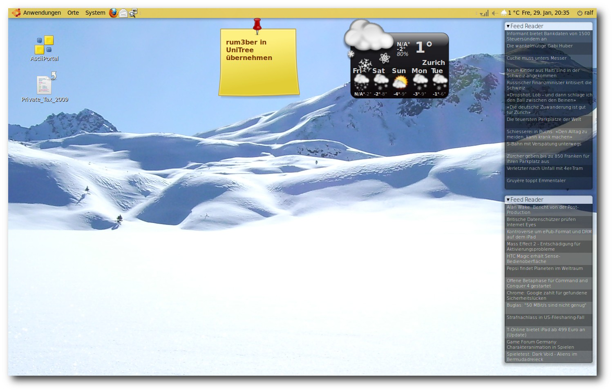
Der Desktop: Zwei Feedreader, das Wetter und eine Notiz.
Der Trick besteht darin, eine Internetseite zu finden, auf der sich
eine Bilddatei eindeutig identifizieren lässt. Die meisten Leser
kennen wohl die Suchmaschine von Microsoft mit dem Namen „Bing“
[6]. Ob man diese Suchseite gut findet und
verwenden möchte, sei jedem selbst überlassen - was man Microsoft
jedoch zugestehen muss ist die gute Auswahl der Hintergrundbilder.
Über Geschmack lässt sich bekanntlich nicht streiten, aber diese
Bilder sind wirklich schön. Deshalb sind sie eine gute Quelle zur
Verschönerung des Desktops. Mit einem simplen Python-Skript lassen
sich die Bilder auf den Desktop zaubern.
Die Programmiersprache Python ist bei den populären
Linuxdistributionen bereits vorhanden und muss daher nicht erst
installiert werden. Das Skript ist sehr einfach und wird im Folgenden
erklärt.
#!/usr/bin/env python
# Get the background image from
# Bing and make it the wallpaper
import urllib
def main():
page = urllib.urlopen("http://www.bing.com").read()
start = page.find("/fd\/hpk2\/", 0)
end = page.find("jpg", start)
url = "http://www.bing.com" + page[start:end+3]
urllib.urlretrieve(url, "bing.jpg")
if __name__ == '__main__': main()
|
Listing: bingster.py
Hinweis: Grundlagen von Python werden im Folgenden nicht erklärt.
Zuerst wird mit
import die Bibliothek
urllib geladen, um auf
Internetseiten zugreifen zu können. Die Hauptfunktion liest zuerst die Seite
http://www.bing.com als String in die Variable
page ein. Die nächste
Zeile sucht in der Seite nach der signifikanten Zeichenfolge
/fg/hpk2/, die das Verzeichnis darstellt, in dem Microsoft die Bing-Bilder
ablegt. Anschließend wird nach der Zeichenfolge
jpg gesucht,
was das Ende der gesuchten Bildadresse markiert. Danach wird nun
die Adresse des Bildes konstruiert indem man
http://www.bing.com mit
der gefundenen Bildadresse kombiniert. Zum Schluss wird das Bild unter
der Adresse in
url bei Bing abgeholt und im aktuellen
Verzeichnis unter dem Namen
bing.jpg abgespeichert.
Jetzt fehlen noch zwei Sachen: das Python-Skript muss in die von
der Internetverbindung abhängigen Startprogramme aufgenommen werden. Das erweiterte
Shellskript sieht dann wie in Listing 4 aus.
Man sollte nicht vergessen, den vorhergehenden Befehl mit einem
&
abzuschließen, damit er als Hintergrundprozess gestartet wird.
Außerdem muss dem Desktop gesagt werden, wo das neue Hintergrundbild
zu finden ist. Dazu öffnet man den Dialog zur Einstellung des
Hintergrundbildes, verweist auf das Bing-Bild und stellt je nach Geschmack den Stil auf
„
zentriert“ oder „
Bildschirm füllen“. Nun wird bei
jedem Start das aktuelle Bild von Bing geholt und auf dem Desktop
gezeigt.
#!/bin/bash
# wait until internet is up before screenlets are started
sleep 12
python -u /usr/share/screenlets/ClearWeather/ClearWeatherScreenlet.py &
python -u /usr/share/screenlets/FeedReader/FeedReaderScreenlet.py &
python -u ~/bingster.py
|
Listing: inetwait.sh
In Zukunft
Über die Zukunft des Desktops gibt es diverse Meinungen. Die einen
glauben an eine Verstärkung der Schreibtisch-Metapher wie im
Bumptop-Video
[7] schön zu sehen ist.
Andere sehen alles in die Wolke wandern und stellen sich den Desktop
im Browser vor und nennen ihn Webtop. Bei Ubuntu und dem GNOME-Desktop
zeigen sich drei Entwicklungen
[8]:
- stärkere Integration von sozialen Elementen wie beim „Me Menu“ [9]
- Ausrichtung auf Aktivitäten und multiple Desktops in der neuen GNOME Shell
- die Zeit als Organisationskriterium für Dokumente in GNOME Zeitgeist.
Betrachtet man den Eingangsbildschirm von aktuellen Smartphones, so
steht hier die Anzeige von wichtigen Informationen im Vordergrund.
Praktisch alle Smartphone-Desktops zeigen PIM-Informationen (Personal Information
Management) an. Dazu gehören: nächste Aktivitäten
(Kalender und Aufgaben), häufige Kontakte (Personen), Nachrichten
(E-Mail, SMS, Messenger, Telefonate), Geo-Infos (Landkarten), häufige
Anwendungen und Dokumente (Programme, Dokumente inklusive Multimedia-Inhalte).
Die Hintergrundbilder von früheren Smartphone-Desktops sind
mittlerweile vollständig von den oben genannten Info-Inhalten
verdrängt worden. Diese Entwicklung ist auf PC-Desktops bisher nicht
zu beobachten.
Fazit
Eine Renovierung der 30 Jahre alten Desktop-Metapher ist überfällig.
Die grafische Benutzeroberfläche als reines Abbild des realen
Schreibtisches wird den heutigen Bedürfnissen nach Information,
Kommunikation und optischer Gestaltung nicht mehr gerecht. Moderne
Desktops bieten vielfältige Möglichkeiten zur Anreicherung nach den
persönlichen Anforderungen. Dennoch, der Desktop an und für sich wirkt
verstaubt. Die ständige Weiterentwicklung der wichtigsten
Linux-Desktops, KDE und GNOME, wird noch in diesem Jahr für frischen
Wind und neue Konzepte sorgen. Das ist gut so, denn die Wüste lebt.
Links
- http://www.aresluna.org/attached/usability/articles/biurkonaekranie/pics/xerox
- http://forum.ubuntuusers.de/topic/den-desktop-aktiv-nutzen/
- http://wiki.ubuntuusers.de/Desklets
- http://screenlets.org/index.php/Download
- http://www.weather.com
- http://www.bing.com
- http://www.youtube.com/watch?v=M0ODskdEPnQ
- https://wiki.ubuntu.com/MeMenu
- http://live.gnome.org/ThreePointZero/Plan
| Autoreninformation |
| Ralf Hersel
schreibt in erster Linie für Ein- und Umsteiger auf Linux.
Sein Fokus liegt auf relevanten Informationen, die die tägliche Arbeit
mit Linux erleichtern und anreichern. Er ist überzeugt davon, dass
Linux das beste Betriebssystem für Computerneulinge ist.
|
| |
Diesen Artikel kommentieren
Zum Index
von Hauke Goos-Habermann
Dieser Artikel zeigt eine weitere Methode, Pakete mit Abhängigkeiten
herunterzuladen. Anders als in dem Artikel „Raus aus der
Ubuntu-Paketabhängigkeitshölle“, freiesMagazin 01/2010 [1],
funktioniert diese Variante ohne Root-Rechte und unabhängig von der
verwendeten Distribution, solange diese die APT-Programme
wie apt-get
bereitstellt.
Da APT bereits alle nötigen Funktionen enthält, um Pakete inklusive
aller Abhängigkeiten herunterzuladen, besteht der eigentliche
„Trick“ darin, APT so zu konfigurieren, dass eine Paketquelle
unabhängig von der des übrigen Systems angelegt und verwaltet
werden kann. In jedem beliebigen Verzeichnis kann eine Datei- und
Verzeichnisstruktur angelegt werden, die von APT akzeptiert wird.
Vorbereitungen
Verzeichnisstruktur anlegen
Die folgenden Schritte werden in einer Shell als normaler Benutzer
ausgeführt. Zuerst legt man ein neues Verzeichnis an und wechselt
hinein. In diesem Verzeichnis werden dann alle weiteren Schritte
ausgeführt.
$ mkdir /tmp/testquelle
$ cd /tmp/testquelle
|
APT benötigt einen Satz von Dateien und Verzeichnissen, um die
Pakete und zusätzliche Informationen ablegen zu können. Unter
lists und
lists/partial werden die Paketindizes gespeichert.
Diese enthalten die Liste aller herunterladbaren Dateien abhängig
von der
sources.list (mehr dazu später).
$ mkdir -p ./lists/partial
$ mkdir -p ./archives/partial
$ mkdir -p ./cache
$ touch ./lists/lock ./status
|
APT speichert die
komplett heruntergeladenen Pakete unter
archives und noch nicht
vollständige Pakete unter
archives/partial. Für die Paketsuche
wird das Verzeichnis
cache von APT erwartet. Damit während der
Aktualisierung der Paketindizes kein weiterer APT-Aufruf gestartet
werden kann, benötigt APT noch die leere Datei
lists/lock.
Die
Datei
status würde in einem normalen System schließlich
Informationen über deinstallierte und installierte Pakete enthalten. Zum
Herunterladen von Paketen wird sie zwar nicht direkt gebraucht,
aber APT beginnt nicht mit der Arbeit, wenn sie fehlt.
Paketquellendatei erstellen
Debian und alle von Debian abgeleiteten Distributionen (z. B.
Ubuntu/Kubuntu) verwenden eine Datei, in der die Paketquellen
(normalerweise Server im Internet) eingetragen sind, von der die
Softwarepakete heruntergeladen werden. Diese Datei heißt
sources.list und befindet sich im Normalfall im Verzeichnis
/etc/apt.
Möchte man Pakete für die gerade verwendete Distribution aus dem
Internet laden, so genügt ein simples Kopieren von
/etc/apt/sources.list in das aktuelle Verzeichnis:
$ cp /etc/apt/sources.list .
|
Dann hat man aber nur die Pakete, die sich auch so herunterladen
und installieren lassen.
Interessant wird die Sache allerdings, wenn man eine neue
sources.list anlegt bzw. die kopierte verändert und in dieser die
Paketquelle(n) einer fremden Distribution angibt. Hierdurch kann
man gänzlich andere Pakete als die der eingesetzten Distribution
herunterladen. Beispielsweise könnte man folgende Zeile eintragen,
wenn man Pakete aus Debian unstable haben möchte,
selbst wenn man Ubuntu einsetzt:
deb http://ftp2.de.debian.org/debian/ unstable main non-free contrib
|
Pakete suchen und herunterladen
Paketindex heruntergeladen
Damit APT weiß, welche Pakete es überhaupt gibt, lädt es hierfür
Indexdateien herunter. Hierbei ist der
apt-get update-Aufruf so
zu erweitern, dass alles auf dem aktuellen Verzeichnis arbeitet:
$ apt-get update -o=Dir::Cache=./cache -o=Dir::Cache::archives=./archives -o=Dir::State::status=./status -o=Dir::State=. -o=Dir::Etc::sourcelist=./sources.list
|
Pakete suchen
Beim Suchen im lokalen Verzeichnis werden die gleichen Anpassungen
vorgenommen:
$ apt-cache search -o=Dir::Cache::archives=./archives -o=Dir::State::status=./status -o=Dir::State=. -o=Dir::Etc::sourcelist=./sources.list <Suchbegriff>
|
Pakete herunterladen
Das Herunterladen von Paketen geschieht ebenfalls mit den
Anpassungen und dem üblichen APT-Befehl. Wichtig hierbei ist, dass
zusätzlich der Parameter
-d angegeben wird, damit APT die Pakete
nur herunterlädt und nicht versucht, diese zu installieren. Nach
Abschluss des Downloads befinden sich die Pakete inklusive der
benötigten Abhängigkeiten im Unterverzeichnis
archives.
$ apt-get install -d -o=Dir::Cache=./cache -o=Dir::Cache::archives=./archives -o=Dir::State::status=./status -o=Dir::State=. -o=Dir::Etc::sourcelist=./sources.list <Pakete>
|
Quellpakete herunterladen
Das Herunterladen von Quellpaketen geschieht analog. Dabei ist der
Parameter
install durch
source zu ersetzen und darauf zu
achten, dass in der
sources.list die zugehörige Quelle für
Quellpakete eingetragen ist. Zum Beispiel
gehört zu dem oben angegebenen Repository das folgende Quellrepository:
deb-src http://ftp2.de.debian.org/debian/ unstable main non-free contrib
|
local-apt
Um die Anwendung einfacher zu gestalten, gibt es die Skriptsammlung
local-apt [2] als fertiges
Paket, das die vorgestellten Schritte in einfachen Kommandos
zusammenfasst und nach Anlegen einer
sources.list in jedem
beliebigen Verzeichnis verwendet werden kann:
- local-apt-update aktualisiert den Paketindex
- local-apt-search <Suchbegriff> sucht ein Paket im Paketindex
- local-apt-download <Paket(e)> lädt ein Paket herunter
- local-apt-source <Paket(e)> lädt den Quellcode eines Paketes herunter
- local-apt-mkpackages erzeugt die Paketindexdateien,
die benötigt werden, um die Pakete zu installieren
(muss im Verzeichnis archives ausgeführt werden).
local-apt installieren
Möchte man
local-apt häufiger benutzen, so bietet sich an, das Paket
fest im System zu installieren. Hierzu lädt man das local-apt-Paket
von der Dodger-Tools-Seite
[3]
herunter und installiert es z. B. mit folgendem Aufruf:
$ cd /tmp
$ wget http://dodger-tools.sourceforge.net/debs/local-apt_1.0-38_all.deb
# dpkg -i local-apt_1.0-38_all.deb
|
Links
- http://www.freiesmagazin.de/freiesMagazin-2010-01
- http://dodger-tools.sourceforge.net/
- http://dodger-tools.sourceforge.net/debs/#end
| Autoreninformation |
| Hauke Goos-Habermann
arbeitet freiberuflich als Entwickler und
Trainer für Linux und Open-Source-Software. Er ist zudem
Hauptentwickler des Softwareverteilungssystems m23 und weiterer Open-Source-Software
sowie Mitorganisator der Kieler Linux- und Open-Source-Tage.
|
| |
Diesen Artikel kommentieren
Zum Index
von Marcel Jakobs
Die Standardshell auf den meisten Linux-Systemen ist die
Bash [1]. Sie ist
sehr mächtig und erlaubt es, viele Aufgaben zu automatisieren.
Dieser Artikel soll sich einer sehr interessanten, noch
mächtigeren Shell widmen, der Z-Shell - kurz zsh [2].
Installation und Start
Die
zsh lässt sich auf den meisten Linux-Systemen aus der
Paketverwaltung über das Paket
zsh installieren. Danach kann man
sie mit dem Aufruf von
ausführen. Um sie zur Standardshell zu machen, genügt der Befehl
$ chsh -s /usr/bin/zsh BENUTZERNAME
|
wobei
BENUTZERNAME durch den entsprechenden eigenen Benutzernamen
ersetzt werden und der Pfad zu
zsh stimmen muss. Wo
zsh liegt,
kann man mit dem folgenden Befehl herausfinden:
Auf manchen Systemen liegt
zsh beispielsweise in
/bin.
Die
zsh bedient sich Elementen der Bash, der Korn-Shell (ksh) und
der TENEX-C-Shell (tcsh - eine erweiterte C-Shell). Sie ist sehr
gut konfigurierbar und fast jedes Verhalten der Bash kann
nachgeahmt werden, sodass der Umstieg sehr leicht fällt. Bestehende
Bash-Scripte können natürlich weiterhin genutzt werden, wenn der
Shebang entsprechend gesetzt ist (siehe „Shebang -
All der Kram“,
freiesMagazin 11/2009
[3]):
Beispiele
Im Folgenden sollen einige interessante Vorteile der
zsh kurz durch
Beispiele beschrieben werden. Da die
zsh sehr viele
Möglichkeiten bietet, ist es aber nicht möglich, alles im Detail zu
erläutern.
Hinweis: Optionen werden mit dem Befehl
setopt gesetzt,
gelten aber nur für die aktuelle Sitzung. Um sie dauerhaft zu aktivieren,
muss man diese in die Konfigurationsdatei
~/.zshrc
schreiben.
Autokorrektur
Die
zsh beherrscht einen Mechanismus, der kleine Tippfehler
automatisch korrigiert. Hat man in einem Ordner eine Datei
testfile.txt und möchte diese nach
file2.txt kopieren, so führt man
in der Regel folgenden Befehl aus:
$ cp testfile.txt file2.txt
|
Wie von der Bash gewohnt, nutzt man dafür die Autovervollständigung
mittels
„Tab“. Bei einem Verschreiber wird dieser in der
zsh
automatisch korrigiert.
Beispiel:
wird automatisch korrigiert und zu
vervollständigt.
Die Autokorrektur aktiviert man mit der Option
correct.
Globale Aliase
Neben den normalen Aliasen für Kommandos, wie man sie aus der Bash
kennt, gibt es in der
zsh noch globale Aliase, die überall im
Befehl genutzt werden können, nicht nur am Anfang.
Zwei Beispiele verdeutlichen dies:
$ alias -g G='| grep'
$ alias -g L='| less'
|
Dies erzeugt die globalen Aliase
G und
L, die man hinter alle
möglichen Befehle schreiben kann, um die Ausgabe des entsprechenden
Befehls in grep oder less umzuleiten:
entspricht dem Befehl
oder
entspricht
Natürlich ist dann auch Folgendes möglich:
was folgendem Befehl entspricht:
Suffix-Aliase
Mit Suffix-Aliasen kann man Programme festlegen, mit denen bestimmte
Dateitypen (anhand ihrer Endung) geöffnet werden sollen. Man
braucht dann nur noch den Namen der Datei eingeben und sie wird mit
dem entsprechenden Programm geöffnet.
Beispiel:
legt einen Alias für PDF-Dateien an, die mit Evince geöffnet werden
sollen. Danach reicht die Eingabe von
und die Datei
dokument.pdf wird mit Evince geöffnet.
Aliase für Verzeichnisse: Hashes
Mit sogenannten Hashes lassen sich Aliase für beliebige
Verzeichnisse anlegen. Auf diese kann dann sehr einfach zugegriffen
werden. Mit dem Befehl
$ hash -d perl=~/development/scripting/perl
|
legt man einen Hash namens
perl für das Verzeichnis
~/development/scripting/perl an. Auf dieses Verzeichnis kann man
jetzt mit
~perl zugreifen - auch innerhalb eines Befehls, wie
folgendes Beispiel zeigt:
Dieser Befehl kopiert die Datei
testscript.pl
in das Verzeichnis
~/development/scripting/perl.
Auto-CD
Mit der Option
autocd kann man zum Wechseln in ein Verzeichnis
einfach den Namen eines Verzeichnisses eingeben und das Kommando
cd
davor weglassen. Wenn es keinen Befehl gibt, der so heißt
wie das Verzeichnis, wird in das Verzeichnis gewechselt - falls
es existiert.
Kurze for-Schleifen
Statt einem
$ for i in *.eps; do epstopdf $i; done
|
um alle EPS-Dateien in einem Verzeichnis in PDF-Dateien umzuwandeln,
genügt unter
zsh die kürzere Form
$ for i (*.eps) epstopdf $i
|
Globale History
Die History, die man mit der
„Pfeil hoch“-Taste durchgehen
kann, kann man in der
zsh so einstellen, dass sie in jeder
zsh-Instanz gleich ist. Das heißt, man hat nicht mehr für jedes
Fenster eine eigene History, sondern kann mit der Taste
„Pfeil hoch“
auch Befehle auswählen, die in anderen Fenstern eingegeben wurden.
Die History wird jedoch nur nach jedem Befehl aktualisiert. Das
heißt, man muss gegebenfalls einmal
„Return“ drücken, damit die
Befehle aus einem anderen Fenster verfügbar sind.
Dieses Verhalten kann mit der Option
share_history aktiviert werden.
Directory Stack
Wie die Bash hat die
zsh auch einen Directory Stack. Mit dem Befehl
pushd kann man das aktuelle Verzeichnis auf den Stack legen und
mit
popd das jeweils letzte Verzeichnis vom Stack nehmen und
dorthin springen.
Mit der Option
auto_pushd legt die
zsh automatisch jedes
Verzeichnis auf den Directory Stack, aus welchem man in ein anderes
Verzeichnis wechselt. So hat man immer eine History der
Verzeichnisse, in denen man war und kann mit
popd sehr einfach
wieder in Verzeichnisse wechseln, die man vorher besucht hatte.
Globbing
Die Nutzung von Wildcards - unter
zsh „Globbing“ genannt - ist bei
der Z-Shell etwas mächtiger als in der Bash.
Zunächst gibt es rekursives Globbing. So kann man mit dem Befehl
alle HTML-Dateien im aktuellen Verzeichnis und allen
Unterverzeichnissen auflisten lassen.
Es gibt jedoch auch noch Qualifier, um Dateien mit bestimmten
Eigenschaften auszuwählen. Diese schreibt man in runde Klammern. So
kann man mit
. normale Dateien, mit
/ Verzeichnisse und mit
@
symbolische Verweise prüfen. Praktisch ist das beispielsweise, wenn man allen
Verzeichnissen ab einem bestimmten Verzeichnis die Rechte
755 und
allen Dateien
644 vergeben möchte. Dies kann man mit den folgenden
zwei Befehlen bewerkstelligen, anstatt mit find und exec zu arbeiten:
$ chmod 755 **/*(/)
$ chmod 644 **/*(.)
|
Zusätzlich gibt es auch Qualifier für verschiedene Dateirechte.
Folgender Befehl listet alle Dateien auf, die von allen beschrieben
werden können:
Auch nach der Dateigröße lässt sich suchen:
listet alle leeren Dateien auf.
Auch die Sortierung lässt sich beliebig anpassen. Mit dem Befehl
listet man alle Dateien der Größe nach von klein nach groß auf. Mit
großem
O wird die Sortierung umgekehrt.
Somit lässt sich mittels Globbing in der
zsh das Kommando find fast
komplett ersetzen.
Die hier gezeigten Beispiele sehen auf den ersten Blick recht
kompliziert und kryptisch aus. Wenn man das Prinzip erst einmal
verstanden hat und die wichtigsten Qualifier kennt, ist es aber ganz
einfach und sehr praktisch.
Es gibt noch jede Menge weiterer Qualifier und Möglichkeiten für das
Globbing (z. B. nur das erste oder eine bestimmte Anzahl von
Elementen auszuwählen).
Im
zsh-Manual
[4]
gibt es eine Liste der Glob-Qualifier.
Um alle Möglichkeiten nutzen zu können, sollte die Option
extended_glob gesetzt werden.
Vervollständigung
Die
zsh hat wie die Bash einen Vervollständigungsmechanismus, sodass man
mit
„Tab“ Kommandos, Dateinamen und vieles mehr
vervollständigen kann. In der
zsh ist dieser Mechanismus jedoch
extrem gut konfigurier- und programmierbar. So kann man beispielsweise beim
scp-Befehl, der Dateien über SSH kopiert, die Verzeichnisse auf dem
entfernten Rechner vervollständigen
[5]
und genau definieren, welche Programme mit welchen Dateitypen
zusammenarbeiten können. Für sehr viele Programme ist dies schon
vorgefertigt, sodass ein
automatisch zu
vervollständigt wird.
Sehr praktisch ist auch die Menüfunktion. So wird beim ersten Druck
auf die
„Tab“-Taste wie in der Bash so weit vervollständigt, bis nicht
mehr eindeutig entschieden werden kann, welche Datei (bzw. welcher Befehl)
gemeint ist. Ein weiterer Druck auf die
„Tab“-Taste listet alle
weiteren Möglichkeiten auf und jeder weitere Druck geht diese
Möglichkeiten durch.
Wenn man also Dateien
test.txt,
testfile1.txt und
testfile2.txt
hat und Folgendes eingibt
so wird zuerst auf
test vervollständigt. Ein weiterer Druck gibt
alle Möglichkeiten aus:
testfile1.txt testfile2.txt
test.txt
|
und ein dritter Druck auf die
„Tab“-Taste vervollständigt den Befehl zu
Das ist viel schneller als erst ein
f einzugeben, um erneut
„Tab“
zu drücken, und dann die
1 einzugeben, um wiederum
„Tab“ zu
drücken, bis der Dateiname endgültig vervollständigt wird.
Ein weiterer Druck auf
„Tab“ nimmt dann die nächste Möglichkeit. In
diesem Beispiel also
und so weiter.
Expansion
Mit der
„Tab“-Taste kann man in der
zsh nicht nur Kommandos,
Dateinamen etc. vervollständigen, sondern auch Variablen
expandieren. Viele kennen die spezielle Variable
!!, die den
zuletzt ausgeführten Befehl enthält. Wenn man
eingibt und
„Tab“ drückt, wird dies automatisch zum zuletzt
ausgeführten Befehl expandiert. Genauso kann man auch jede andere
Variable expandieren:
und
„Tab“ wird beispielsweise zu
/home/zimon/development, wenn man
sich gerade in diesem Verzeichnis befindet.
History-Kontrolle
Wie bei der Bash auch, kann man in der
zsh die History durchsuchen.
Die
zsh geht jedoch so weit, dass man auch nach bestimmten
Parametern suchen kann.
Ein Beispiel:
$ cp ../perl/foo.pl ~/development/projektordner
|
Danach kommen ein paar andere Kommandos. Möchte man nun eine andere
Datei in den gleichen Projektordner kopieren, reicht folgende Eingabe:
$ cp ../perl/bar.pl !?proj?:3
|
Mit
!? wird nach einem vorherigen Befehl gesucht. Das
proj ist
eine Zeichenkette, die in diesem Befehl vorkam. Mit dem
?:3 wird
das dritte Argument genutzt. Durch Expansion (siehe oben) kann man
durch einen Druck auf
„Tab“ diesen Ausdruck auch noch expandieren,
um sicherzugehen, dass das richtige Argument ausgewählt wurde.
Man kann zwar mit
„Alt“ +
„+“, wie in der Bash, die jeweils letzten
Argumente durchgehen. Auf diese Weise kann man aber auch das zweite
von drei Argumenten suchen.
Es gibt noch wesentlich mehr Möglichkeiten die History zu durchsuchen und zu verwenden.
Hochkonfigurierbarer Prompt
In der Z-Shell kann man nicht nur die linke Seite des Prompts,
sondern auch die rechte Seite konfigurieren. Der Prompt in der
Abbildung ist eine abgeänderte Version von
Phil!s ZSH Prompt
[6]).
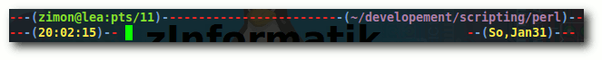
Ein Beispiel-Prompt der zsh.
Die Anzeige der Uhrzeit inklusive Sekunden ist recht praktisch, da
man daran sieht, wie lange ein Befehl gedauert hat oder wann man ihn
ausgeführt hat. Es gibt jedoch auch die Möglichkeit, automatisch die
Ausgabe von
time bei der Beendigung eines Befehls ausgeben zu
lassen, der länger als eine vorher definierte Zeit benötigt hat.
ZLE-Widgets
Der Z-Line-Editor (ZLE
[7])
ist sozusagen die Eingabezeile in der
zsh. Mit diesem kann man sich
kleine Programme schreiben, die einem das Leben vereinfachen.
Ein Beispiel wäre ein Programm, dass bei der Eingabe
von
... diese zu
../.. umwandelt. Jeder weitere Punkt wird wieder
umgewandelt. So kann man recht einfach folgendes eingeben:
Auf dem Bildschirm erscheint jedoch folgendes:
Diese Erweiterung ist nicht Standard der Z-Shell. Man kann sie aber
durch folgenden Code in der Konfigurationsdatei
~/.zshrc erzeugen:
rationalise-dot() {
if [[ $LBUFFER = *.. ]]; then
LBUFFER+=/..
else
LBUFFER+=.
fi
}
zle -N rationalise-dot
bindkey . rationalise-dot
|
Automatisches tee-ing
In der Z-Shell kann man die Ausgabe eines Kommandos recht einfach in
mehrere verschiedene Dateien umleiten. Statt wie in der Bash
$ ls | tee -a all | tee actual
|
zu schreiben, kann man in der
zsh einfach
eingeben. Beide Befehle führen
ls aus und hängen die Ausgabe an die
Datei
all an und schreiben sie in die Datei
actual, wobei der Inhalt
der letzten dabei überschrieben wird. Möchte man die Ausgabe wie beim
original
tee-Befehl auch auf dem Bildschirm sehen, so leitet man
sie auch noch auf STDOUT um:
Verzeichnisse durch Ersetzung wechseln
Ein Beispiel sollte dies am besten erklären. Angenommen, man hat
die zwei Verzeichnisse
~/development/scripting/perl/modules
und
~/development/scripting/python/modules
und befindet sich in
~/development/scripting/perl/modules,
so kann man durch den Befehl
in das Verzeichnis
~/development/scripting/python/modules wechseln.
Bei einem
cd-Kommando mit zwei Parametern wird im aktuellen
Verzeichnis-String das erste Wort durch das zweite ersetzt. Hier
also
perl durch
python.
Fazit
Viele der hier beschriebenen Beispiele sind sicherlich auch mit
Erweiterungen in der Bash möglich. Sie zeigen aber auf jeden Fall,
dass die Z-Shell jede Menge interessante Möglichkeiten bietet. Die
oben gezeigten Funktionen sind aber meist nur angerissen und
liefern nur eine kleine Auswahl von dem, was die Z-Shell zur Verfügung stellt.
Darüber hinaus besitzt die Z-Shell eine ganze Reihe Module (z. B.
für Matheoperationen oder einen eigenen FTP-Client), die man bei
Bedarf laden kann. Sehr schön ist auch die Möglichkeit, den
Screen-Titel von der
zsh aus zu
setzen
[8].
Es lohnt sich auf jeden Fall, diese Shell etwas genauer zu betrachten.
Im Netz findet man sehr viele Seiten, welche die Funktionen der
zsh
näher beschreiben, darunter Michael Prokops
zsh-Liebhaberseite
[9], das
ZshWiki
[10] oder „Zzappers Best of ZSH Tips“
[11].
Links
- http://tiswww.case.edu/php/chet/bash/bashtop.html
- http://zsh.sourceforge.net/
- http://www.freiesmagazin.de/freiesMagazin-2009-11
- http://zsh.sourceforge.net/Doc/Release/zsh_toc.html
- http://blog.pimpmyshell.de/2007/01/21/ssh-completion-mit-zsh/
- http://aperiodic.net/phil/prompt/
- http://zsh.sourceforge.net/Doc/Release/zsh_17.html
- http://zinformatik.de/linux/titel-von-screen-fenstern-automatisch-von-vim-bash-und-zsh-setzen/
- http://michael-prokop.at/computer/tools_zsh_liebhaber.html
- http://zshwiki.org/
- http://rayninfo.co.uk/tips/zshtips.html
| Autoreninformation |
| Marcel Jakobs
arbeitet gerne auf der Kommandozeile. Auf Anregung eines
zsh-Nutzers hin hat er sich
diese Shell
genauer
angesehen und ist aufgrund der vielen Möglichkeiten dabei
geblieben.
|
| |
Diesen Artikel kommentieren
Zum Index
von Jochen Schnelle
Die Google Charts API [1] stellt eine Möglichkeit dar, Diagramme schnell
und einfach zu generieren, ohne zusätzliche Software, nur mit Hilfe
eines Web-Browsers.
Einleitung
Viele Diagramme, die Daten graphisch visualisieren, werden mit
Hilfe der bekannten Office-Programme wie OpenOffice.org Calc, Gnumeric,
Microsoft Excel etc. erstellt. Dies hat auch Vorteile, wenn man aus
einer Vielzahl von Einzeldaten gezielt bestimmte Ausschnitte
darstellen möchte. Will (oder muss) man jedoch dynamisch generierte
Daten, beispielsweise aus einer Datenbank-Abfrage, visualisieren und
möchte das Diagramm dann auch noch in eine Internet-Seite einbinden,
so ist dies mit den Office-Programmen nur schwerlich möglich.
Für viele der gängigen Programmiersprachen gibt es Bibliotheken,
welche ebenfalls das Erstellen von Diagrammen ermöglichen. Allerdings
müssen diese erst auf dem System installiert werden und erfordern
eine mehr oder minder steile Lernkurve und Programmiererfahrung in
der entsprechenden Sprache.
Eine Alternative stellt hier die Google Charts API
[1] dar. Mit Hilfe
von Google Charts können Diagramme einfach per Web-Browser erstellt
werden, in dem man alle Parameter in der URL übergibt. Als Ergebnis
wird dann eine
PNG-Grafik mit dem entsprechendem Diagramm zurück
geliefert.
Diagrammarten
Über die Google Chart API lassen sich alle gängigen Diagrammtypen wie
Balken-, Linien-, Punkt- und Tortendiagramme generieren.
Weiterhin können Venn-Diagramme
[2], Landkarten-Diagramme,
QR-Barcodes
[3] und sogenannten Google-O-Meter-Diagramme erzeugt
werden. Eine vollständige Übersicht findet man auf der Chart-Gallery-Seite
[4]. Je nach
Diagrammart stehen diverse Optionen bei der Diagrammerstellung zur
Verfügung
[5] wie z. B. Achsbeschriftung, Anzeigen von Werten,
Markierung, Einfärben von Diagrammbereichen
oder eine zweite Achse.
Nutzungsbedingungen
Im Gegensatz zu anderen Serviceangeboten und Applikationen von Google
ist weder eine Registrierung noch ein Benutzerkonto bei Google
notwendig. Google Charts kann direkt und ohne Weiteres benutzt
werden. Google erlaubt bis zu 250.000 Diagramme pro Tag, mehr sind
auf Anfrage möglich. Auch wenn die Nutzungsbedingungen sehr moderat
sind, empfiehlt es sich, vor dem Einbinden von Diagrammen auf der
eigenen Webseite die „Terms of Services“
[6] und
die „Privacy Policy“
[7] zu lesen.
Diagramm erzeugen
Im Folgenden werden einige der möglichen Diagrammtypen sowie diverse
Optionen bei der Diagrammerzeugung gezeigt. Dabei wird von dem
fiktiven Beispiel ausgegangen, dass die Besucherzahlen einer Webseite pro Quartal
der Jahre 2009 und 2008 visualisiert werden sollen.
Als Zahlen werden für 2009 die Werte 1210, 980, 670 und 1050 und für 2008
die Werte 1100, 1025, 890 und 960 angenommen.
Wie oben bereits erwähnt, werden die Daten für die Diagramme komplett
in der URL übergeben. Die Grund-URL für alle Abfragen lautet dabei
http://chart.apis.google.com/chart?
|
Danach folgen die Daten bzw. Parameter, jeweils durch ein Und-Zeichen
& getrennt.
Benötigte Parameter
Unabhängig von der Diagrammart werden drei Angaben immer benötigt.
Dies sind die Diagrammart, die Größe des Diagramms in Pixeln sowie
die Daten, welche dargestellt werden sollen. Alle weiteren Angaben
sind optional.
Die Art des Diagramms wird mit dem Parameter
cht=, gefolgt von einem
zwei oder drei-stelligen Buchstaben-/Zahlencode angegeben. So würde
z. B.
cht=bvg ein Balkendiagramm mit senkrechten Balken erzeugen oder
cht=lc ein einfaches Liniendiagramm. Eine Übersicht über alle
Diagramme und deren Abkürzung findet man auf der Chart-Gallery-Seite
[4].
Die Größe des Diagramms wird dem Parameter
chs=, gefolgt von der
Größenangabe in Pixel, angegeben. Die Größe muss dabei immer in der
Form „Breite×Höhe“ angegeben werden, also z. B.
chs=500x400. Die
Gesamtgröße des Diagramms ist allerdings auf 30.000 Pixel beschränkt.
Die Daten, die im Diagramm dargestellt werden sollen, werden mit
dem Parameter
chd= übergeben. Die Daten werden grundsätzlich codiert
angegeben, was im folgenden Abschnitt genauer erklärt wird.
Ein vertikales Balkendiagramm mit einer Größe von 300×200 Pixeln und
Extended Codierung - hier werden die Daten 2009 aus dem oben
genannten Beispiel dargestellt - ist über folgende URL abrufbar:
http://chart.apis.google.com/chart?cht=bvg&chs=300x200&chd=e:S6,PU,Ke,QA
|
 Ein einfaches Google-Chart-Diagramm.
Ein einfaches Google-Chart-Diagramm.
Da die Charts API ein PNG-Bild zurückliefert, welches von allen
gängigen Browsern dargestellt werden kann, kann man das Diagramm auch
einfach in eine HTML-basierte Webseite einbinden:
<html>
<body>
<h1>Ein Google Charts Diagramm</h1>
<img src="http://chart.apis.google.com/chart?cht=bvg&chs=300x200&chd=e:S6,PU,Ke,QA">
</body>
</html>
|
Listing: google-charts-diagramm.html
Daten und Datencodierung
Wie oben bereits erwähnt werden die Daten für das Diagramm an Google
Charts codiert übergeben, wobei codiert hier nicht im Sinne von
„verschlüsselt“ gemeint ist. Es gibt drei verschiedene Codierungen:
Text, Simple und Extended
[8]. Die Codierung wird in Form eines
einzelnen Buchstabens festgelegt, welcher an der Parameter
chd=
angehängt wird:
- chd=t für Text,
- chd=s für Simple und
- chd=e für Extended.
Die Textcodierung ist eigentlich gar keine Codierung, da hier die
Werte als Zahl unverändert übergeben werden. Der vollständige
Parameter für die Zugriffszahlen 2009 gemäß Beispiel ist also
chd=t:1210,980,670,1050. Allerdings geht die Textcodierung per
Voreinstellung davon aus, dass alle Werte im Bereich von 0 bis 100
liegen. Alles, was darüber liegt, wird einfach bei 100 abgeschnitten.
Daher ist bei Zahlen größer 100 zusätzlich eine Angabe der Skalierung
notwendig, in der der Min- und Max-Wert explizit angegeben wird. Der
entsprechende Parameter lautet
chds=, für das Beispiel hier also
chds=0,1210. Der Min- und Max-Wert müssen dabei nicht den
tatsächlichen Werten entsprechen. Google Charts benutzt die Werte, um
die Datenpunkte in Relation zur Höhe der Y-Achse, welche dem Max-Wert
entspricht, zu setzen. Möchte man also, dass das Diagramm etwas höher
ist als der höchste Datenpunkt, dann würde man hier z. B.
chds=0,1500
setzen. So deckt die Y-Achse den Bereich von 0 bis 1500 ab. Liegen
alle Datenwerte im Bereich 0 bis 100, wie z. B. Prozentwerte, dann
ist die Angabe von
chds= nicht notwendig.
Bei der Codierung „Simple“ stehen 63 Werte zur Verfügung, die über die
26 Buchstaben des Alphabets in Groß- und Kleinschreibung und die
Zahlen von 0 bis 9 dargestellt werden. Die Codierung „Extended“ nutzt
die gleichen Zeichen wie Simple und zusätzlich noch den Punkt
. sowie
das Minus-Zeichen
-, aber es werden immer Paare von Zeichen verwendet,
wie man auch im obigen Beispiel sieht. Dadurch ist ein Wertebereich
von 0 bis 4095 möglich. Natürlich kann man auch größere Werte mit
Hilfe von Simple und Extended darstellen. Dazu muss man die
darzustellenden Werte auf 63 bzw. 4095 normieren. Auf der
Übersichtsseite
[9] findet
man eine JavaScript-Funktion, welche dies für die Simple-Codierung
direkt durchführt.
Die Verwendung von Simple- und Extended-Codierungen hat zwei Vorteile:
Zum einen wird die URL kürzer, was nicht zu unterschätzen
ist, gerade wenn man komplexe Diagramme mit vielen
Parametern erzeugt. Zum anderen wird die Y-Achse immer automatisch
richtig skaliert. Der Nachteil ist, dass die Daten nicht direkt
ablesbar sind, was gerade bei der Überprüfung von Diagrammen
hinderlich sein kann.
Natürlich ist es auch, egal für welche Codierung, möglich, mehr als
einen Datensatz an die Charts API zu übergeben. Dazu müssen die
einzelnen Datensätze mittels Pipe-Zeichen
| getrennt werden. Möchte
man die Werte von 2009 und 2008 aus dem Beispiel in einem
Balkendiagramm darstellen, so lautet die entsprechenden URL unter
Verwendung der Text-Codierung
http://chart.apis.google.com/chart?cht=bvg&chs=300x200&chd=t:1210,980,670,1050|1100,1025,890,960&chds=0,1300
|
Nun ist dieses Diagramm nicht besonders aussagekräftig, weil
Google Charts für beide Datenreihen die gleiche Farbe verwendet. Man
kann jedoch ohne weiteres eigene Farbvorgaben machen, indem man den
Parameter
chco= übergibt. Die Farbwerte werden in den HTML-üblichen
Hexadezimal-Werten für den RGB-Farbraum übergeben. Im folgenden
Beispiel wird die erste Datenreihe rot, die zweite blau dargestellt:
http://chart.apis.google.com/chart?cht=bvg&chs=300x200&chd=t:1210,980,670,1050|1100,1025,890,960&chds=0,1300&chco=ff0000,0000ff
|
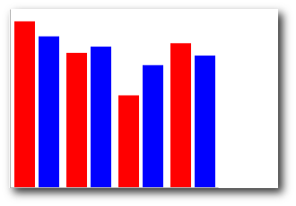
Balkendiagramm mit zwei Datenreihen und eigener Farbeinstellung.
Möchte man die Diagrammart ändern, so tauscht man einfach den Wert von
cht= aus, z. B.
cht=lc (statt
cht=bvg) für ein Liniendiagramm,
cht=p3 für ein
Torten-Diagramm oder
cht=bhg für ein horizontales Balkendiagramm.
Beschriftungen für Diagramme
Wie man in den obigen Beispielen sieht, erzeugt Google Charts - im
Gegensatz zu Office-Programmen - keine Achsenbeschriftungen, Legenden
etc. für die Diagramme. Beschriftungen müssen explizit als Parameter
in der URL angegeben werden.
Einen Diagrammtitel erzeugt man mit dem Parameter
chtt=. Besteht der
Titel aus mehr als einem Wort, so müssen die Worte per Plus-Zeichen
verbunden werden. Ein Zeilenumbruch wird per Pipe-Zeichen erzeugt:
http://chart.apis.google.com/chart?cht=bvg&chs=300x200&chd=t:1210,980,670,1050&chds=0,1300&chtt=Besucher+Website|pro+Quartal+2009
|
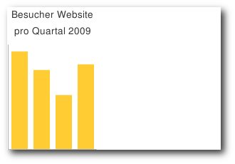
Diagramm mit Titel und Umbruch.
Eine Legende erzeugt man mit dem Parameter
chdl= , gefolgt von dem
Text, der in der Legende erscheinen soll. Mehrere Worte müssen wieder
per Plus-Zeichen verbunden werden; die Beschriftungen für die
einzelnen Datenreihen werden per Pipe-Zeichen getrennt:
http://chart.apis.google.com/chart?cht=bvg&chs=300x200&chd=t:1210,980,670,1050|1100,1025,890,960&chds=0,1300&chco=ff0000,0000ff&chdl=2009|2008
|
Um Werte auf der X- und Y-Achse anzuzeigen, muss man den Parameter
chxt= angeben und als Wert spezifizieren, für welche Achsen die Werte
angezeigt werden sollen. Google Charts kennt vier verschiedene Achsen,
wobei hier nur die X- und Y-Achse genutzt werden, d. h. der volle
Parameter lautet
chxt=x,y:
http://chart.apis.google.com/chart?cht=bvg&chs=300x200&chd=t:1210,980,670,1050&chds=0,1300&chxt=x,y
|
Allerdings beschriftet Google Charts die Werte so nur mit den
Standardvorgaben, d. h. die X-Achse wird 1,2,...,n durchnummeriert,
die Y-Achse wird von 0 bis 100 beschriftet, unabhängig von den
tatsächlich übergebenen Daten. Entspricht die Beschriftung nicht den
eigenen Werten, wie in diesem Beispiel, so muss man den Text für die
Beschriftung zusätzlich angeben. Dies geschieht mit dem Parameter
chxl= . Die Übergabe der Werte ist hier etwas komplexer. Als erstes
muss die fortlaufende Nummer der Achse angegeben werden. Die
Nummerierung entspricht der Reihenfolge der Achsen bei
chxt=, die
Zählung beginnt jedoch bei 0. Dann werden die Werte getrennt durch
ein Pipe-Zeichen angegeben.
Gemäß dem hier verwendeten Beispiel soll die X-Achse mit
„1Q, 2Q, 3Q, 4Q“ beschriftet werden, die Y-Achse von 0 bis 1500 in 500er
Schritten:
http://chart.apis.google.com/chart?cht=bvg&chs=300x200&chd=t:1210,980,670,1050&chds=0,1500&chxt=x,y&chxl=0:|1Q|2Q|3Q|4Q|1:|0|500|1000|1500
|
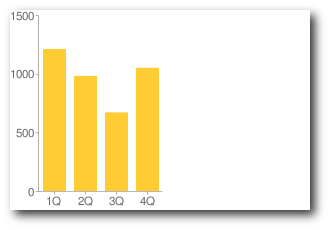
Diagramm mit X- und Y-Achsen-Beschriftung.
Per Voreinstellung wird die Beschriftung äquidistant angeordnet, was
für das obige Beispiel passend ist. Benötigt man jedoch eine
Beschriftung, bei der eine Positionierung nicht-äquidistant erfolgen
soll, so muss man zusätzlich die Position der Beschriftung über den
Parameter
chxp= angeben. Dabei wird zuerst die Achse angegeben
und dann die Position der Werte. Die Position wird im Bereich von 0
bis 100 angegeben.
Im Folgenden wird die Y-Achse aus dem Diagramm
gemäß dem vorherigen Beispiel mit den Werten 0, 150, 750 und 1500
beschriftet:
http://chart.apis.google.com/chart?cht=bvg&chs=300x200&chd=t:1210,980,670,1050&chds=0,1500&chxt=x,y&chxl=0:|1Q|2Q|3Q|4Q|1:|0|150|750|1500&chxp=1,0,15,50,100
|
Zusätzlich zur Achsenbeschriftung können die Datenpunkte im Diagramm
beschriftet werden. Dazu wird der Parameter
chm= benötigt. Die zu
übergebenden Werte muten etwas kryptisch an und können variieren;
mehr Details findet man in der Chart Feature List
[10]. An dritter Stelle wird aber immer
die Nummer der zugehörigen Datenreihe angegeben; die Zählung
beginnt auch hier mit 0:
http://chart.apis.google.com/chart?cht=bvg&chs=300x200&chd=t:1210,980,670,1050|1100,1025,890,960&chds=0,1300&chco=ff0000,0000ff&chm=N*f0*,000000,0,-1,11|N*f0*,000000,1,-1,11
|
 Diagramm mit beschrifteten Datenpunkten.
Diagramm mit beschrifteten Datenpunkten.
X-Achse verschieben
Es besteht die Möglichkeit, die X-Achse zu verschieben. Dies ist
hilfreich, wenn z. B. Unterschiede zwischen zwei Datenreihen
visualisiert werden sollen. Im hier verwendeten Beispiel kann so die
Differenz der Besucherzahl pro Quartal im Vergleich zum Vorjahr
gezeigt werden. Die X-Achse wird über das Parameter
chp= verschoben.
Der Wert muss eine Zahl zwischen 0 und 1 sein. 0 entspricht dabei der
üblichen X-Achse am unteren Rand, bei 1 läge die Achse am oberen Ende
des Diagramms. Im folgenden wird die X-Achse genau in die Mitte des
Diagramms gelegt:
http://chart.apis.google.com/chart?cht=bvg&chs=300x200&chd=t:120,-45,-230,90&chds=-250,250&chp=0.5
|
Wichtig ist, dass durch die Verschiebung der X-Achse nicht
automatisch der dargestellte Werte-Bereich verschoben wird! Daher
sollte zusätzlich immer der Parameter
chds= angegeben werden, damit
die Werte korrekt angezeigt werden.
Weitere Formatierungen
Die Google Charts API kennt noch eine Reihe von weiteren, hier nicht
gezeigten Möglichkeiten. Dazu zählen u. a. eine farbliche
Formatierung der Achsen, das Einfärben von Diagrammbereichen, das Ändern des
Linienstils, das Einblenden von Gitternetzlinien, spezielle Marker,
doppelte X- und Y-Achsen, Beschriftung etc. Die entsprechenden
Informationen findet man in der Chart Feature List
[11].
Google-o-Meter-Diagramme
Ein einfaches, aber nützliches Diagramm ist das sogenannte
Google-o-Meter, kurz GoM. Hierbei handelt es sich um eine Art
Tachonadel, die standardmäßig Werte im Bereich von 0 bis 100 auf
einer farbigen Skala darstellt. Die gängigen Office-Programme bieten
hier kein Äquivalent. Das GoM kann z. B. dazu genutzt werden, um eine
Auslastung oder einen Erfüllungsgrad darzustellen:
http://chart.apis.google.com/chart?cht=gom&chs=300x200&chd=t:75
|
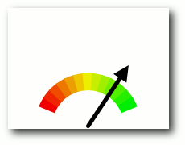
Google-o-Meter-Diagramm.
Auch hier funktionieren die oben genannten
Parameter wie Diagrammtitel und Beschriftung des Datenpunktes. Über
chco= kann die Farbeinteilung der Skala geändert werden.
Karten-Diagramme
Eine weitere interessante Diagrammart, welche in dieser Form in den
üblichen Office-Programmen auch nicht vorhanden ist, sind
Karten-Diagramme. Dabei können Länder auf einer (Welt-)Karte gemäß
dem ihnen zugeordneten Datenwert eingefärbt werden. Eine Übersicht
über die vorhanden Karten gibt die Map-Charts-Übersichtsseite
[12]. Die Karte wird über den
Parameter
cht=t&chtm=, gefolgt vom Namen der Karte, festgelegt.
Die Namen der Länder werden als zweistelliger ISO-3316-Code
übergeben (eine vollständige Liste der Codes findet man bei der ISO
[13]),
der entsprechende Parameter heißt
chld=. Weiterhin müssen bei
Karten-Diagrammen mindestens drei Farben definiert werden: die erste
Farbe ist die Vorgabe-Farbe für alle Länder, für die kein Datenwert
vorliegt. Hier empfiehlt sich, immer weiß (
=ffffff) als Farbe zu
nutzen. Die nächsten beiden Farbwerte definieren die Start- und die
Endfarbe, den Verlauf dazwischen kann die Charts API selber
berechnen. Des Weiteren
empfiehlt es sich, bei Karten immer den
Parameter
chf=bg,s,EAF7FE zu nutzen, wodurch der Hintergrund - bei
Karten also die Meeresfläche - in einem Blauton eingefärbt wird. Die
Daten können in den bekannten Codierungen vorliegen. Eine
Einschränkung ist, dass Kartendiagramme maximal 440×220 Pixel groß
sein können. Im folgenden als Beispiel eine Europa-Karte, bei der
den Ländern Deutschland, Belgien, Schweden, Italien und Rumänien ein
Wert zugewiesen wird:
http://chart.apis.google.com/chart?cht=t&chtm=europe&chs=440x220&chd=t:75,40,95,10,60&chld=DEBESEITRO&chco=ffffff,ff0000,00ff00&chf=bg,s,EAF7FE
|
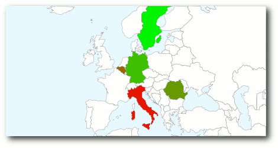
Karten-Diagramm.
Nachteile und Schwierigkeiten
Auch wenn sich Diagramme mit Hilfe der Google Charts API schnell und
einfach erzeugen lassen und dazu hinreichend Optionen zur
Formatierung der Diagramme vorhanden sind, so gibt es doch einige negative Punkte.
Hat man einen Fehler in der URL, z. B. wenn man versehentlich ein
Pipe-Zeichen statt eines Kommas verwendet, so erhält man entweder ein
leeres Diagramm oder eine wenig aussagekräftige Fehlermeldung „Bad
data request“. Den Fehler muss man händisch suchen, was sehr
schwierig sein kann. Nur wenn einer der immer benötigten Parameter
wie z. B. die Diagrammgröße fehlt, erhält man eine konkretere
Fehlermeldung.
Des Weiteren können die URLs der Diagramme sehr lang sein, wenn man
viele der Optionen nutzt, z. B. fasst
http://chart.apis.google.com/chart?cht=bvg&chs=400x200&chd=t:1210,980,670,1050|1100,1025,890,960&chds=0,1300&chco=ff0000,0000ff&chtt=Besucher+pro+Quartal&chxt=x,y&chxl=0:|1Q|2Q|3Q|4Q|1:|0|500|1000|1500&&chdl=2009|2008&chm=N*f0*,000000,0,-1,11|N*f0*,000000,1,-1,11
|
alle obigen Beispiel zur Besucherstatistik 2008 und 2009 in
einem Diagramm zusammen. Die Länge der URL macht das Suchen von
Fehlern schwierig. Abhilfe können hier Bibliotheken schaffen, die
für verschiedene Programmiersprachen wie Python
[14] [15] oder Perl
[16] existieren.
Die Dokumentation der Google Charts API ist zwar vollständig;
allerdings ist sie, wenn auch strukturiert, auf mehrere Seiten verteilt. Außerdem
werden immer nur kurze Schnipsel der Parameter gezeigt,
selten vollständige Parametersätze und fast nie komplette
URL-Beispiele. Dies macht den Einsteig etwas schwierig, auch wenn die
API an sich sehr einfach ist.
Zusammenfassung
Die Google Charts API stellt eine schnelle und - nach etwas
Einarbeitung - einfache Art dar, Diagramme zu erstellen. Die Diagramme
können direkt in eine HTML-Seite eingebettet werden. Die API ist
komplett über die URL aufrufbar und somit von jedem Browser aus und
plattformunabhängig nutzbar. Die Auswahl der Diagrammarten und
die Formatierungsmöglichkeiten sind sehr gut, mit dem Google-o-Meter,
QR-Barcodes und den Karten-Diagrammen stehen drei Diagrammtypen zur
Auswahl, die mit konventionellen Office-Programmen nur schwer zu
realisieren sind.
Links
- http://code.google.com/intl/de-DE/apis/charttools/
- http://de.wikipedia.org/wiki/Venn-Diagramm
- http://de.wikipedia.org/wiki/BAR-Code#QR-Code
- http://code.google.com/intl/de-DE/apis/chart/docs/gallery/chart_gall.html
- http://code.google.com/intl/de-DE/apis/chart/docs/making_charts.html
- http://code.google.com/intl/de-DE/terms.html
- http://www.google.com/intl/de-DE/privacy.html
- http://code.google.com/intl/de-DE/apis/chart/docs/data_formats.html
- http://code.google.com/intl/de-DE/apis/chart/docs/data_formats.html#encoding_data
- http://code.google.com/intl/de-DE/apis/chart/docs/chart_params.html#gcharts_line_markers
- http://code.google.com/intl/de-DE/apis/chart/docs/chart_params.html
- http://code.google.com/intl/de-DE/apis/chart/docs/gallery/map_charts.html
- http://www.learnstuff.com/country-names-and-codes/
- http://code.google.com/p/google-chartwrapper/
- http://pygooglechart.slowchop.com/pygooglechart/
- http://search.cpan.org/~dmaki/Google-Chart-0.05014/lib/Google/Chart.pm
| Autoreninformation |
| Jochen Schnelle
nutzt Google Charts beruflich für diverse Projekte und Intranet-Seiten.
Privat ist er Ubuntu-Nutzer und seit mehreren Jahren im
Wiki-Team von ubuntuusers.de aktiv. |
| |
Diesen Artikel kommentieren
Zum Index
von Volker Duetsch
Der Editor Vim [1] bzw. sein grafisches Pendant
GVim bieten von Haus aus ein enormes Leistungsspektrum. Dieses kann
mit sogenannten Plug-ins erweitert werden. In diesem Artikel soll das
Surround-Plug-in vorgestellt werden.
Wer noch nie etwas mit dem Vim-Editor zu tun hatte, findet im
Artikel „Vim - Ein Schnelleinstieg“,
freiesMagazin
08/2008
[2], eine
Einstiegshilfe in die Materie, die auch das Verstehen und
Nachvollziehen der Beispiele vereinfacht.
Die Plug-ins/Erweiterungen in Vim werden in der Regel in Vimscript
erstellt. Eine dieser Erweiterungen ist das Plug-in
surround.vim. Dieses erleichtert vor allem den Umgang mit
Markup-Dateien (z. B. HTML, XML, DocBook-XML), ist aber auch bei der
Erstellung von LaTeX-Dokumenten und generell bei der Programmierung
sehr hilfreich. Das Surround-Plug-in stellt Tastenkombinationen zur
Verfügung, die das Erstellen, Verändern und Entfernen von Tags,
Klammerpaaren, Anführungszeichen und deren Inhalte vereinfachen.
Hinweis: Dieser Artikel wird nicht explizit Vimscript
behandeln. Wer sich dafür interessiert, findet auf der Website von
IBM developerWorks einige sehr interessante Artikel
[3] [4].
Modi und Modiwechsel
Vim ist ein modaler Editor, d. h. er bietet verschiedene Modi zum
Erstellen, Bearbeiten und Verändern von Dateiinhalten. Dieses
Konzept ist auf den ersten Blick ungewöhnlich, böse Zungen würden
behaupten nicht mehr zeitgemäß. Aber nach einer gewissen Lern- und
Einarbeitungsphase lernt man die Vorzüge dieses Bedienkonzeptes
schätzen.
Nach dem Start des Vim-Editors befindet sich dieser im Normalmodus
(Voraussetzung: man startet Vim ohne modiverändernde
Kommandozeilenparameter). Der einfachste Weg, um in den
Einfügemodus zu gelangen, ist die Taste
„I“. Um den Einfügemodus
wieder zu verlassen, wird
„Esc“ betätigt. Den Kommandozeilenmodus
erreicht man mit
„:“ (also
„Umschalt“ +
„.“) und verlässt ihn wieder
mit
„Esc“. Eine recht hilfreiche Grafik zum Modi-Wechsel findet man
im englischsprachigen Dokument „Vim Introduction and Tutorial“
[5].
Download und Installation
Das gerade mal 9,4 KB große Plug-in muss nach dem
Download
[6]
noch installiert werden. Dazu entpackt man die ZIP-Datei in den
versteckten Ordner
.vim im Homeverzeichnis:
$ unzip surround.zip -d ~/.vim
|
Das ZIP-Archiv enthält zwei Dateien:
surround.vim und
surround.txt. Durch die Ausführung des unzip-Befehls wird
surround.vim, das eigentliche Plug-in, in
~/.vim/plugin/
abgelegt. Die Datei
surround.txt, welche den Hilfetext
bereitstellt, landet in
~/.vim/doc/. Der Hilfetext ist damit aber
noch nicht im Editor abrufbar. Dies geschieht mittels
:helptags
~/.vim/doc. Dieses Kommando wird im Editor im Kommandozeilenmodus
eingegeben. Das war auch schon die Installation.
Anwendung
Die Funktionsweise lässt sich am besten anhand von Beispielen
beschreiben.
Folgende Konventionen gelten für die Beispiele:
„Vorher“ beschreibt die Ausgangssituation der zu
bearbeitenden/verändernden Textpassage.
„Nachher“ stellt das Ergebnis nach der Ausführung des Kommandos dar.
„Cursorposition“ beschreibt, wo bzw. innerhalb welches Bereichs
sich der Cursor befinden muss, damit das Kommando korrekt
ausgeführt wird.
„Kommando“ stellt den Befehl für die Verarbeitung dar. Alle
Kommandos werden, wenn nicht anders angegeben, im Normalmodus
eingeben. Ein Nachteil dabei ist, dass die Kommandos überwiegend
„blind“ eingegeben werden. Sollte man sich dabei einmal vertippen
bzw. unsicher sein, was man gerade eingegeben hat, kann man den
Vorgang mittels
„Esc“ abbrechen.
Sieht das Ergebnis nach dem
Ausführen des Kommandos nicht so aus, wie man es erwartet hat -
kein Problem. Dafür gibt es die Undo-Funktion von Vim.
Mittels
„U“ im Normalmodus oder
:earlier
im Kommandozeilenmodus ist die
Ausgangssituation wieder hergestellt.
Abschließend wird versucht, jedes Beispiel zu erklären. Dies soll
die auf den ersten Blick teilweise recht kryptischen Kommandos
entschlüsseln und das Erlernen erleichtern.
| Beispiel 1 |
| Vorher | "Hello World" |
| Nachher | <H1>Hello World</H1> |
| Cursorposition | Cursor befindet sich innerhalb der Anführungszeichen |
| Kommando | cs"tH1 |
| |
Verändere (
c=change) die Hello World umgebenden (
s=surrounding)
doppelten Anführungszeichen (
") zu einem Tag (
t) der Form
H1.
| Beispiel 2 |
| Vorher | <p>Ich bin ein Absatz.</p> |
| Nachher | Ich bin ein Absatz. |
| Cursorposition | Cursor steht innerhalb des öffnenden <p>- und schließenden </p>-Tag |
| Kommando | dst |
| |
Entferne (
d=delete) die umgebenen (
s=surrounding) Tags (
t),
die „Ich bin ein Absatz.“ umgeben.
| Beispiel 3 |
| Vorher | (2*2)+4 |
| Nachher | 2*2+4 |
| Cursorposition | Cursor steht innerhalb des Klammerpaares |
| Kommando | ds( |
| |
Entferne (
d=delete
s=surrounding) das Klammernpaar (
(), welches den
Ausdruck „2*2“ umgibt. Alternativ kann auch das Kommando
ds)
verwendet werden.
| Beispiel 4 |
| Vorher | Eine kurze Textzeile. |
| Nachher | <p>Eine kurze Textzeile.</p> |
| Cursorposition | Cursor befindet sich in der Zeile |
| Kommando | ysstp |
| |
Umgib (
y=yank
s=surrounding) den gesamten Satz (
s=sentence)
„Eine kurze Textzeile.“ mit dem Tag (
t) der Form
p.
| Beispiel 5 |
| Vorher | Hello World |
| Nachher | Hello (World) |
| Cursorposition | Cursor befindet sich auf dem Buchstaben W |
| Kommando | ysw) |
| |
Umgib (
y=yank
s=surrounding) das Wort (
w=word) „World“ mit einem
Klammernpaar (
)).
| Beispiel 6 |
| Vorher | Hello World |
| Nachher | Hello ( World ) |
| Cursorposition | Cursor befindet sich auf dem Buchstaben W |
| Kommando | ysw( |
| |
Umgib (
y=yank
s=surrounding) das Wort (
w=word) „World“ mit einem
Klammerpaar (
(). Man beachte den Unterschied zu dem vorhergehenden
Beispiel durch die Eingabe von
( statt
), wird zusätzlich
innerhalb des Klammerpaares ein Leerzeichen zu Beginn und Ende des
Wortes „World“ eingefügt.
| Beispiel 7 |
| Vorher | Hello World |
| Nachher | "Hello" World |
| Cursorposition | Cursor befindet sich auf Hello |
| Kommando | ysiw" |
| |
Umgib (
y=yank
s=surrounding) das Wort (
i=inner
w=word) „Hello“ mit
einem doppelten Anführungszeichen (
").
Warum ysiw" und nicht ysw"?
Die Wirkungsweise der beiden Kommandos ist nur dann identisch, wenn
sich der Cursor während der Ausführung des Kommandos direkt auf dem
Buchstaben „H“ von „Hello World“ befindet. Befindet sich der Cursor z. B. auf dem Buchstaben „e“ von „Hello World“ passiert Folgendes:
ysw" wird zu
H"ello" World, während dies bei
ysiw" zu
"Hello" World führt.
w definiert die Wortgrenze von der aktuellen Cursorposition bis zum
nächsten auftretenden Leerzeichen in Richtung rechts. Der
Unterschied zwischen
w und
iw (inner word) besteht darin, wie
Wortgrenzen definiert bzw. behandelt werden.
iw definiert die
Wortgrenze von der aktuellen Cursorposition bis zum nächsten
auftretenden Leerzeichen in Richtung links und rechts.
iw oder auch
aw sind sogenannte Textobjects. Diese Textobjects
stehen nur zur Verfügung, wenn Vim mit der Option
+textobjects
kompiliert wurde. Um diese Einstellung zu überprüfen, wird im
Ex-Mode
:ve eingegeben. Erscheint in der Ausgabe
+textobjects,
steht diese Option zu Verfügung. Erscheint
-textobjects, stehen
diese Optionen nicht zur Verfügung und die Beispiele können nur
eingeschränkt nachvollzogen werden.
Die Textobjects sind eine sehr mächtige Funktion des
Vim-Editors. Mehr Informationen dazu findet man in der Hilfe mittels
:help
text-objects.
Wäre die Cursorposition in den Beispielen 5 und 6 also abweichend,
sollte man auf Textobjects zurückgreifen und das Kommando
entsprechend für Beispiel 5
ysiw) oder
ysiw( für Beispiel 6 anpassen.
| Beispiel 8 |
| Vorher | <li>Listeneintrag 1</li> |
| <li>Listeneintrag 2</li> |
| Nachher | <ul> |
| <li>Listeneintrag 1</li> |
| <li>Listeneintrag 2</li> |
| </ul> |
| Cursorposition | Cursor befindet sich auf < von <li>Listeneintrag 1 |
| Kommando | ys}tul |
| |
Umschließe (
y=yank
s=surrounding) den Absatz (
}=paragraph) mit einen
Tag (
t) der Form
ul.
| Beispiel 9 |
| Vorher | $varIn = ["Hello World"] |
| Nachher | $varIn = ['Hello World'] |
| Cursorposition | Cursor befindet sich auf Hello |
| Kommando | cs"' |
| |
Verändere (
c=change) die „Hello World“ umgebenden (
s=surrounding)
doppelten Anführungszeichen (
") in einfache Anführungszeichen (
').
Weitere Anwendung
Das Surround-Plug-in ist auf den Normalmodus ausgelegt. Einige
Funktionen stehen aber auch im visuellen Modus und im Einfügemodus zur
Verfügung.
Der visuelle Modus ist eine Vim-Verbesserung und ähnelt dem
Normalmodus. Mit Hilfe der Maus oder Tastenkombinationen können
Bereiche markiert werden, in denen dann auch nur das Kommando wirkt.
Im Einfügemodus ist gerade die Funktion
„Strg“ +
„S“ gefolgt von z. B.
',
",
(,
[ oder
{ interessant, da gleichzeitig zum öffnenden auch das
schließende Symbol erzeugt wird. Ein unschöner Nebeneffekt, der bei
der Konsolenversion von Vim auftreten kann, ist, dass die Eingabe
von
„Strg“ +
„S“ dazu führt, dass bei einigen Terminals die
Bildschirmausgabe unterbrochen wird. Das Terminal erweckt den
Eindruck als wäre es eingefroren, aber
„Strg“ +
„Q“ aktiviert die Bildschirmausgabe wieder.
Weitere Informationen
Weitere Informationen zum Surround-Plug-in bietet die Dokumentation
des Plug-ins, welche im Kommandozeilenmodus mit
:help surround
aufgerufen wird.
Eine Erweiterung, die die Wiederholung der Kommandos mittels
.
ermöglicht, stellt das Plug-in
repeat.vim [7] dar, welches
ebenfalls vom Autor des Surround-Plug-ins, Tim Pope, stammt.
Besonders für einen vertiefenden Einstieg ist
„Speaking UNIX: The new and
improved Vim editor“
[8]
zu empfehlen.
Links
- http://www.vim.org/
- http://www.freiesmagazin.de/freiesMagazin-2008-08
- http://www.ibm.com/developerworks/linux/library/l-vim-script-1/index.html
- http://www.ibm.com/developerworks/linux/library/l-vim-script-2/index.html
- http://blog.interlinked.org/tutorials/vim_tutorial.html
- http://www.vim.org/scripts/script.php?script_id=1697
- http://www.vim.org/scripts/script.php?script_id=2136
- http://www.ibm.com/developerworks/aix/library/au-speakingunix_vim/index.html
| Autoreninformation |
| Volker Duetsch ist überzeugter Nutzer des
modalen Editierens auf verschiedenen Betriebssystemen und setzt
dafür Vim ein.
|
| |
Diesen Artikel kommentieren
Zum Index
von Christian Brabandt
Dieser Artikel gibt einen Überblick über GNU sed [1]
und seine Anwendungsmöglichkeiten. Andere sed-Versionen sollten genauso
funktionieren, können sich aber in Details leider durchaus unterscheiden.
Eine schöne Übersicht über Inkompatibiltäten finden sich in den sed-FAQ auf
SourceForge [2].
Was ist sed?
sed ist eine Abkürzung und steht für „Stream Editor“, was bedeutet, dass es sich
dabei um einen nicht-interaktiven Editor handelt, der somit für die
Stapelverarbeitung sehr gut geeignet ist.
Während man bei einem interaktiven Editor typischerweise den Cursor
bewegt und an bestimmten Stellen auf dem Monitor Veränderungen vornimmt,
arbeitet man bei
sed in Ermangelung eines Cursors mit Aktionen, die
typischerweise durch Muster oder Zeilennummern spezifiziert werden. Das
klingt im ersten Moment etwas seltsam, aber man kann damit sehr flexibel
mit einem Einzeiler Aktionen durchführen.
Das heißt,
sed liest die zu bearbeitende Datei normalerweise zeilenweise
in einen Puffer (den „Pattern Space“), prüft, ob die angegebenen
Bedingungen zutreffen und, falls ja, führt es die Änderungen durch und gibt
diesen Puffer wieder aus.
So kann man zum Beispiel einfach in einer Eingabe alle Vorkommen von dem
falschen, englischen Artikel „teh“ durch die korrekte Version „the“ ersetzen.
Oder man kann alle Kommentarzeichen aus einer Konfigurationsdatei
entfernen. Es gab sogar schon Leute, die mit
sed Spiele programmiert,
einen Debugger implementiert oder einen Webserver umgesetzt haben.
Dies alles, obwohl die Sprache keine Variablen kennt und nur
eingeschränkte Kontrollstrukturen. Seine Sprachelemente erscheinen auf
den ersten Blick etwas kryptisch und sehen oft auch aus wie feinster
Buchstabensalat.
sed hat, wie so viele praktische Werkzeuge, seinen Ursprung in
der Unix-Welt und wurde 1973 oder 1974 (Unix Version 4) als
Erweiterung bzw. Nachfolger von grep und ed entwickelt. Die verwendete Syntax und
Lexik beeinflusste auch maßgeblich Programme wie vi, perl, awk und
vermutlich auch die ein oder andere Shell.
Da
sed so weit verbreitet ist, gehört es auch zur POSIX Single Unix
Specification beziehungsweise zum Standard IEEE 1003.1 (beide Standards
bezeichnen dasselbe, nachzulesen auf der Seite von „The Open
Group“
[3]). Beide Standards
definieren u. a. Schnittstellen und Werkzeuge, die auf einem System
vorhanden sein müssen, um den Markennamen UNIX tragen zu dürfen.
Damit ist der grundsätzliche Befehlssatz und die Grammatik von
sed, die man erwarten kann,
auch schon standardisiert. Falls wider Erwarten kein
sed enthalten sein
sollte, kann man es leicht über die Paketverwaltung über das gleichnamige Paket nachinstallieren.
sed und reguläre Ausdrücke
sed arbeitet wie oben erwähnt mit Mustern, die bestimmte Teile definieren, an denen
Änderungen vorgenommen werden sollen. Diese Muster werden typischerweise
durch reguläre Ausdrücke definiert.
GNU
sed unterstützt dabei einfache
reguläre Ausdrücke (Basic Regular Expressions) bzw. mit dem Schalter
-r erweiterte reguläre Ausdrücke (Extended Regular Expressions), z. B.
reguläre Ausdrücke, die von egrep benutzt werden.
Etwas vereinfacht ausgedrückt, ist der Unterschied zwischen einfachen regulären Ausdrücken und
erweiterten regulären Ausdrücken der, dass bei den ersten der
\ genutzt wird, um die Sonderbedeutung der Zeichen einzuschalten, während bei
letzteren der
\ die Sonderbedeutung der Zeichen ausschaltet.
Reguläre Ausdrücke kurz erklärt
Bei regulären Ausdrücken steht normalerweise jedes Zeichen für sich
selbst. Besondere Bedeutung haben jedoch folgende Zeichen, die man sich
einmal genauer anschauen sollte:
Anker
- ^
- steht für den Zeilenanfang.
- $
- steht für das Zeilenende.
- .
- steht für irgendein Zeichen.
Zeichenklassen
- [... ]
- steht für irgendein Zeichen innerhalb der eckigen Klammer.
- [a-z]
- passt auf alle Kleinbuchstaben des Alphabets, [abc] entweder auf a oder auf b oder auf c.
- [^... ]
- passt auf irgendein Zeichen, welches nicht innerhalb der eckigen Klammer angegeben ist.
- ^[a-z]
- passt auf alle Zeichen, die keine Kleinbuchstaben
sind. (Der Bereich, der durch diese Angabe definiert ist, wird maßgeblich durch die
Lokalisierung auf dem jeweiligen System bestimmt. Hierfür sind vor allem die beiden Umgebungsvariablen
LC_ALL und LC_CTYPE verantwortlich.)
Quantifier
- *
- steht für kein bis beliebig häufiges Auftreten, dabei wird ein längerer passender Ausdruck bevorzugt
(sogenannte Greediness, „Gier“). a* passt also auf „ “, „a“, „aa“, „aaa“
und so weiter, bei einer Zeichenkette „baah“ wird es aber immer auf
„aa“ passen.
- \?
- steht für kein- oder einmaliges Auftreten (als
erweiterter regulärer Ausdruck: ?).
- \+
- steht für genau ein- oder mehrmaliges Auftreten (bei
erweiterten regulären Ausdrücken +). Längere Treffer
werden dabei bevorzugt. Ursprünglich kennen die elementaren regulären Ausdrücke
diesen Quantifier nicht. Mittlerweile wird aber \+ auch meist unterstützt.
Falls es die Unterstützung für \+ nicht vorhanden sein sollte,
so kann man diesen Quantifier auch mit * nachbilden. a\+ ist nämlich gleichbedeutend mit aa* (findet eine beliebige Anzahl a, aber mindestens 1).
Verschachtelung
- \( \)
- steht für Klammerung (bei erweiterten regulären
Ausdrücken ohne Backslash, also ( )). Damit kann man sich Ausdrücke merken
und sie später mit den Variablen \0 bis
\9 referenzieren. Das heißt, man kann maximal zehn verschiedene
Zeichenketten referenzieren, mehr geht nicht. Dabei zählt immer die
Reihenfolge der öffnenden Klammer. \0 bezieht sich dabei auf den
kompletten Match und bedeutet das gleiche wie &. \(a\)b\1 passt auf „aba“ aber nicht auf
„abba“.
Sonstiges
- \|
- passt entweder auf den vorherigen Ausdruck oder den nachfolgenden Ausdruck
(bei erweiterten regulären Ausdrücken | - ). a\|b passt auf a oder auf b.
- \n
- steht für den Zeilenumbruch. Hier sollte man auch beachten, dass
sed seine Eingabe zeilenorientiert liest. Das heißt, normalerweise wird ein Muster mit einem
\n für einen Zeilenumbruch nicht passen. Man kann zwar damit arbeiten, aber
man sollte das im Hinterkopf behalten, wenn man \n benutzt.)
- \$
- passt auf ein $-Zeichen (denn $ steht ja für das Ende der Zeile.
So kann man mit dem Backslash nachstehende Zeichen maskieren.
\* passt auf einen *, \& passt auf das
Kaufmanns-Und usw.
Das ist soweit das Wichtigste zu den regulären Ausdrücken, die von
sed
unterstützt werden. Die Syntax ist nicht so schwer, man sollte sich nur
merken, welche der vielen Dialekte der regulären Ausdrücke
sed
beherrscht.
Darüber hinaus unterstützt GNU
sed die POSIX
Zeichenklassen, d. h. das Muster
[[:lower:]] passt auf alle
Kleinbuchstaben und
[[:upper:]] auf alle Großbuchstaben. Außerdem
beherrscht GNU
sed noch Muster, die mit
einem Backslash anfangen.
\w passt zum Beispiel auf ein
„Word-Character“, als Zeichenklasse ausgedrückt:
[A-Za-z0-9_],
\W passt auf ein „Non-Word-Character“ und
ist somit die Umkehrung von
\w (also
[^a-zA-Z0-9_]). Die beiden Muster
\< und
\> bedeuten den Start
beziehungsweise das Ende des Wortes. Weitere
\-Muster werden auch unterstützt,
dafür sei aber letzten Endes auf die Manpages bzw. Infopages verwiesen.
Sed und fortgeschrittene Eigenschaften regulärer Ausdrücke
So fortgeschrittene Sachen wie „Look-Around Assertions“, „Non-Greedy
Matches“, „Non-Capturing Groups“ oder auch rekursive Ausdrücke der
perlkompatiblen regulären Ausdrücke beherrscht
sed leider nicht. Eine gute
Übersicht über die vorhandenen Möglichkeiten gibt schließlich die Wikipedia
[4].
Adressierung von Zeilen
Diese Ausdrücke definieren nun, wo etwas gemacht wird. Anstelle von
Mustern kann man aber auch die Zeilennummern angeben.
$ als
Zeilennummer passt dabei immer auf die letzte Zeile.
Die Adressierung erfolgt entweder durch Angabe genau der Zeile, für die
etwas gemacht werden soll oder alternativ durch Angabe eines Bereiches.
Einen Bereich trennt man dann durch ein Komma ab. Die Angabe
1,$ ist
gleichbedeutend mit der Angabe von der ersten Zeile bis zur letzten und
kann alternativ durch
% angegeben werden.
Zusätzlich erlaubt es GNU
sed noch, Schrittfolgen zu definieren. Also zum
Beispiel von Zeile 1 ausgehend, jede zweite (also 1, 3, 5, 7, ...).
1~2 passt genau auf dieses Muster, während
0~2 jede gerade Zeile ausgibt.
Verallgemeinert gesagt bezeichnet
x~y also ein Muster, in
dem
x die Startzeile angibt und
y die
Schrittfolge.
Kommandos
Welche Aktionen durchgeführt werden, bestimmen die Kommandos. Diese
Kommandos verstehen entweder keine Adressen (z. B. Sprungangaben und
Kommentare), eine oder keine Adressen oder zwei Adressen (nämlich
Start- und End-Adresse).
Die folgenden Kommandos kennt dabei GNU
sed:
- #
- Die Raute kennzeichnet einen Kommentar.
- s/x/y/
- ersetze x durch y.
- :
- Der Doppelpunkt definiert bei sed eine Sprungmarke.
- =
- Das Gleichheitszeichen gibt die Zeilennummer aus.
- a\Text
- hängt „Text“ als neue Zeile an.
- i\Text
- fügt „Text“ vor der aktuellen Zeile ein.
- c\Text
- ersetzt die aktuelle Zeile durch „Text“.
- q
- beendet sed.
- r foobar
- hängt den Inhalt der Datei foobar hinter die
aktuelle Zeile an.
- R foobar
- fügt eine Zeile der Datei foobar hinter die
aktuelle Zeile an.
- b foobar
- weist sed an, zur Sprungmarke foobar zu
springen.
- p
- Gib die Treffer aus.
- t foobar
- Springe zur Sprungmarke foobar, wenn das letzte
s-Kommando erfolgreich war.
- T foobar
- Springe zur Sprungmarke foobar, wenn das letzte
Kommando nicht erfolgreich war.
- d
- Lösche die aktuelle eingelesene Zeile und fange von
vorne an.
- n
- Lies die nächste Zeile ein.
- N
- Lies die nächste Zeile ein und hänge sie an die
aktuelle Zeile an.
- w foobar
- Schreibe den aktuellen Inhalt in die Datei foobar.
- W foobar
- Schreibe ausschließlich die erste Zeile des aktuellen
Puffers in die Datei foobar.
- y/a/b/
- Ersetze a durch b; funktioniert so ähnlich wie
tr. Mit y/abcdefghijklmnopqrstuvwxyz/ABCDEFGHIJKLMNOPQRSTUVWXYZ/ werden alle Kleinbuchstaben durch Großbuchstaben ersetzt.
- !
- weist sed an, das jeweils nachfolgende Kommando für alle Zeilen außer der
aktuellen Zeile auszuführen.
Normalerweise liest
sed die Eingabe (bis zum Zeilenende
\n) in den
Arbeitspuffer (den sogenannten „Pattern Space“), führt die Kommandos
dort aus und gibt anschließend die Änderungen aus. Daneben gibt es noch
einen extra Puffer, den sogenannten „Hold Space“. In ihm kann man Daten
zwischenspeichern und später wieder verwenden. Dafür gibt es die
folgenden Kommandos:
- D
- Lösche bis zum ersten Zeilenumbruch im Pattern Space
und fange dann wieder von vorne an.
- x
- Tausche die Inhalte des Pattern Spaces und Hold Spaces
aus.
- h
- Kopiere den Pattern Space an den Hold Space Puffer.
- H
- Hänge den Pattern Space an den Hold Space Puffer an.
- g
- Kopiere den Hold Space Puffer in den Pattern Space.
- G
- Hänge den Hold Space Puffer an den Pattern Space an.
Adressen und Kommandos definieren die Aktionen
Durch Klammerung mit
{ kann man definieren, welche Kommandos logisch
zusammengehören und entsprechend zusammen ausgeführt werden.
Der Aufbau eines Kommandos und der Adressangabe ist dabei folgender:
Adresse1,Adresse2 {Kommando1; Kommando2; Kommando3;
...; KommandoN}. Muster werden durch Slashes
/ getrennt angegeben:
/Muster1/,/Muster2/ {Kommando1; Kommando2}.
Durch die Angabe zweier Adressen definiert man einen Bereich, in dem die
nachfolgenden Kommandos ausgeführt werden (inklusive der Start- und
Endzeilen). Wenn man nur eine Adresse
angibt, dann wird das Kommando nur an dieser einen Stelle ausgeführt.
Wenn man nur ein Kommando ausführen will, kann man die Klammerung auch
weglassen. Werden alle Adressen weggelassen, bezieht sich das Kommando
immer auf deie komplette Eingabe (also von Zeile 1 bis zur letzten Zeile).
sed anhand von Beispielen erklärt
Nachdem nun die Grundlagen bekannt sind, wird
sed abschließend noch
anhand von Beispielen erklärt. Einige dieser
Beispiele sind den „Sed 1 Liners“
[5]
entnommen.
Hier gibt
sed die Zeile 3 und auschließlich die Zeile 3 aus.
Und hier wird alles von Zeile 3 bis 5 ausgegeben (inklusive dieser Zeilen). Normalerweise wird bei
sed der Input immer auch ausgegeben; mit
-n unterdrückt man das, und nur
wenn man es explizit verlangt (Kommando
p) wird etwas ausgegeben.
Das einfachste Kommando ist das
#-Kommando. Allein für sich macht das gar nichts
und gibt einfach alles aus:
$ sed '#' foobar
Der Fuchs ist rot und rot sind auch Aepfel.
|
Alternativ kann man auch das leere Kommando angeben:
$ sed “ foobar
Der Fuchs ist rot und rot sind auch Aepfel.
|
Das Gleiche erreicht man auch mit dem „Kommando“
;, welches eigentlich
verschiedene Kommandos trennt. In diesem Fall führt es ein
„Null“-Kommando aus und gibt daher alles aus, was es einliest:
$ sed ';' foobar
Der Fuchs ist rot und rot sind auch Aepfel.
|
Das verbreitetste Kommando ist sicherlich das
s-Kommando. Damit kann man
nach einem Muster suchen und dieses durch ein anderes ersetzen. Zum
Beispiel ersetzt
$ sed 's/rot/gruen/' foobar
|
die Zeichenfolge „rot“ durch „gruen“ und gibt die Änderung aus:
$ sed 's/rot/gruen/' foobar
Der Fuchs ist gruen und rot sind auch Aepfel.
|
Naja, aber eigentlich ist der Fuchs ja rot und Äpfel sind grün. Daher
kann man dem
s-Kommando noch zusätzliche Flags mitgeben. Das bekannteste
Flag ist das
g-Flag. Damit werden alle gefundenen Muster ersetzt:
$ sed 's/rot/gruen/g' foobar
Der Fuchs ist gruen und gruen sind auch Aepfel.
|
Man kann aber auch nur bestimmte Muster ersetzen, zum Beispiel nur das 2. Muster:
$ sed 's/rot/gruen/2' foobar
Der Fuchs ist rot und gruen sind auch Aepfel.
|
Wenn kein Flag angegeben wird, wird implizit die 1 angenommen (also das erste gefundene Muster wird ersetzt).
Ein weiteres Flag ist das
i-Flag. Hierbei wird das Muster „case-insensitive“
gesucht, d. h. Klein-/Großbuchstaben spielen keine Rolle. Es ist auch
möglich, mehrere Flags miteinander zu kombinieren:
$ sed 's/ROT/blau/ig' foobar
Der Fuchs ist blau und blau sind auch Aepfel.
|
Manchmal möchte man aber auch Pfadangaben ersetzen. Blöd nur, dass der
Slash
/ normalerweise das Muster vom Ersetzungstext trennt. Möchte man
nun z. B.
/usr/local/share/foobar durch
/usr/share/foobar ersetzen,
müßte man sowas schreiben:
$ sed 's/\/usr\/local\/share\/foobar/\/usr\/share\/foobar/g' script
|
Daher erlaubt
sed es, irgendein anderes Trennzeichen zu nutzen,
z. B. die Pipe
|:
$ sed 's|/usr/local/share/foobar|/usr/share/foobar|g' script
|
Oder man entscheidet sich für den Unterstrich
_:
$ sed 's_/usr/local/share/foobar_/usr/share/foobar_g' script
|
Oder auch irgendein anderes Zeichen, was nicht im Muster vorkommt.
Manchmal möchte man auch das gefundene Muster im Ersetzungsteil wieder
verwenden. Wenn man z. B. eine Anweisung in einer
Konfigurationsdatei auskommentieren möchte, die mit „foobar“ anfängt,
kann man das so machen:
$ sed 's/^\(foobar\)/#\1/' config
#foobar wichtig!
|
Oder man benutzt einfach den Replacement Character
&, der für das Muster
steht, das gefunden wurde:
$ sed 's/^\(foobar\)/#&/' config
#foobar wichtig!
|
Vereinfachen kann man das noch so:
$ sed '/^foobar/s/^/#/' config
#foobar wichtig!
|
Hier benutzt man den regulären Ausdruck
/^foobar/ als Adresse,
und nur Zeilen, die ausschließlich auf dieses Muster passen, werden ersetzt. Vereinfacht
gesagt, ersetzt man das Zeichen
^ (das ja für den Zeilenanfang steht) durch ein
# und fügt somit noch eine Raute an den Anfang der Zeile ein.
Aber natürlich kann man noch mehr mit regulären Ausdrücken machen. Zum Beispiel
Kleinbuchstaben durch Großbuchstaben ersetzen:
$ ls /home/ | sed 's/[[:lower:]]/\U&/g'
CB
CHRISBRA
FTP
|
sed sucht nach der Posix-Klasse von Kleinbuchstaben und ersetzt diese
durch die entsprechenden Großbuchstaben. Das
\U steht für „Uppercase“ und
wandelt alle Zeichen in die passenden Großbuchstaben um. Man beachte die
Nutzung von
&, um das gefundene Muster wieder zu verwenden. Ohne das Flag
g wäre übrigens nur der erste Buchstabe groß geschrieben worden. Das
gleiche kann man übrigens mit dem Kommando
y/ erreichen:
$ ls /home/ | sed 'y/abcdefghijklmnopqrstuvwxyz/ABCDEFGHIJKLMNOPQRSTUVWXYZ/'
CB
CHRISBRA
FTP
|
Das ist etwas umständlich, denn das
y-Kommando scheint keine
Zeichenklassen zu unterstützen, sondern man muss explizit alle Zeichen
hinschreiben.
cat -n simulieren
Ein einfaches
cat -n macht nichts weiter als die Datei inklusive
Zeilennummern auszugeben:
$ cat -n datei
1 eins
2 zwei
3 drei
|
Mit
sed kann man das nun wie folgt simulieren:
$ sed -e '=' datei | sed -e '/^[0-9]\+$/{N;s/\n/ /}'
1 eins
2 zwei
3 drei
|
Hier werden zwei
sed-Prozesse benötigt, weil der erste nichts weiter macht,
als in die Ausgabe die Zeilennummer mit Zeilenendezeichen
\n getrennt
zu schreiben. Nachfolgende
sed-Befehle können diese Zeilen nicht mehr
ändern. Daher wird ein zweiter
sed-Prozess gestartet, der alle Zeilen
auswählt, die nur mit Zahlen anfangen (der reguläre
Ausdruck dazu ist
^[0-9]\+$),
für diese Zeile die nächste Zeile einliest (
N) und danach per Substitute-Befehl
das Zeilenendezeichen
\n durch ein Leerzeichen ersetzt. Es ist
wichtig, dass zunächst die nachfolgende Zeile eingelesen wird, ansonsten
sieht
sed nicht das Zeilenendezeichen
\n.
Die Lösung ist schon nahezu perfekt. Wünschenswert wäre es vielleicht noch, dass man die Eingabe
eingerückt ausgibt. Außerdem trennt
cat -n die Ausgaber per
Tabulatorzeichen
\t, wie ein Hexdump bestätigt.
Eine vollständige Lösung samt der gewünschten Ausgabe könnte
schließlich mit dem folgenden Einzeiler erreicht werden:
$ sed -e '=' datei | sed -e '/^[0-9]\+$/{N;s/\n/\t/;s/^/ /}'
1 eins
2 zwei
3 drei
|
wc -l simulieren
Wie man vielleicht weiß, kann man mit dem Programm wc - neben einigen anderen Möglichkeiten
- über den Schalter
-l auch die jeweilige Anzahl der Zeilen für die
aufgerufene Datei ausgeben:
Auch
sed kann die Anzahl der Zeilen angeben:
Hier wurde der Schalter
-n benutzt. Normalerweise kopiert
sed jede Zeile
der Eingabe in die Ausgabe. Dies wird durch den Schalter
-n verhindert und
sed schreibt nur eine Ausgabe, wenn es explizit verlangt wird (zum
Beispiel mit dem Print-Kommando). Die regulären Ausdrücke
$= sind wieder eine Adressangabe (
$ steht für die letzte Zeile)
und die Anweisung, die Zeilennummer zu schreiben. Das heißt, wenn
sed die letzte
Zeile einliest, wird es die aktuelle Zeilennummer ausgeben, die zufällig mit der Anzahl
der Zeilen in der Eingabe übereinstimmt.
tac emulieren
sed kennt, wie schon gesagt, neben dem Verarbeitungspuffer (Pattern Space)
noch den Hold
Space, in dem Daten temporär abgelegt werden können. Von diesem
temporären Puffer wird hier Gebrauch gemacht:
$ sed '1!G;h;$!d' datei
drei
zwei
eins
|
Das
h als Anweisung bedeutet jetzt, dass die aktuell bearbeitete Zeile in diesen Puffer kopiert wird.
Die erste Anweisung
1!G weist
sed an, den Inhalt dieses
Zwischenspeichers an die aktuell zu bearbeitende Zeile mit
Zeilenendezeichen
\n getrennt anzuhängen (außer in der ersten Zeile, denn
zu diesem Zeitpunkt ist der Zwischenspeicher noch leer). Diese Eingabe wird dann
wiederum in den temporären Puffer geschrieben.
Die letzte Anweisung
$!d
bedeutet „lösche jede Zeile außer der letzten“ (
! entspricht einem Nicht-Operator).
Wenn
sed die letzte Zeile liest, fügt es den Inhalt aller vorherigen
Zeilen an und gibt diese wieder aus. Durch die Art, wie die Zeilen
angehängt werden, entspricht diese Reihenfolge genau der umgekehrten
Reihenfolge der Eingabe.
Eine alternative Anweisung, in der
sed explizit nur die letzte
Zeile ausgibt und ansonsten keine Ausgabe erzeugt, könnte auf folgende
Art realisiert werden:
$ sed -n '1!G;h;\$p' datei
drei
zwei
eins
|
Dieser
sed-Einzeiler enthält die folgenden drei Anweisungen:
1!G,
h,
$!p.
Dabei bedeutet
1!G nun, dass der Inhalt jeder Zeile, außer der ersten Zeile, in den
temporären Puffer (Hold Space) geschrieben wird.
Zeilen mit Backslash-Ende in eine Zeile schreiben
Möchte man zwei durch einen Backslash getrennte Zeilen zu einer
zusammenfügen, hilft der folgende Ausdruck:
$ sed -e ':a' -e '/\\$/{N;s/\\\n//;ta}'
|
In der ersten Anweisung wird die Sprungmarke
:a definiert. Das erlaubt
es, später wieder dorthin zu springen. In der nächsten Anweisung sucht
sed nach Zeilen, die mit einem Backslash aufhören, wobei mit
\\$ der Backslash
einmal maskiert werden muss, sonst würde
sed nach dem
$-Literal suchen.
Für diese Zeilen liest
sed die nächste Zeile ein (Kommando
N) und löscht anschließend die Zeichenfolge „\“, gefolgt von einem Zeilenende.
Dadurch sind nun die ehemals zwei getrennten Zeilen wieder zu einer
Zeile zusammengefügt. Nachdem dies geschehen ist, springt
sed zur Sprungmarke
:a und fängt wieder von vorne an (falls die neue Zeile ebenfalls mit einem
\ endet). Wenn nichts gefunden wird, wird die Zeile ausgegeben.
grep emulieren
sed sucht nach Zeilen, die das Suchmuster enthalten. Alle Zeilen, die
nicht auf das Muster passen, werden gelöscht und nicht ausgegeben.
$ sed '/eins/!d' datei
eins
|
Eine alternative Lösung besteht im folgenden Einzeiler:
$ sed -n '/eins/p' datei
eins
|
Hier wird
sed nur dann etwas ausgeben,
wenn es dazu angewiesen wird. Und in diesem Fall wird
sed
dazu angewiesen, wenn genau das Muster
/eins/ auf die die
verarbeitete Zeile passen sollte.
tail -10 emulieren
Im folgenden Fall wird
sed immer maximal zehn Zeilen in seinem Puffer halten.
$ sed -e ':a' -e '$q;N;11,$D;ba' /var/log/syslog
|
Sobald
sed die letzte Zeile erreicht, wird der komplette Puffer
ausgegeben. Jede eingelesene Zeile veranlasst
sed dazu, die nächste
Zeile einzulesen (
N) und nachdem es zehn Zeilen eingelesen hat, wird
sed
immer die erste eingelesene Zeile löschen (
D) und mit der nächsten Zeile
fortsetzen. Zum Schluss wird
sed angewiesen, zur Sprungmarke
:a zu springen
und von vorne anzufangen. Dadurch wird sichergestellt, dass niemals mehr
als zehn Zeilen im Puffer sind.
Leere Zeilen löschen
Leere Zeilen sind oft unnötiger Ballast und sollen entfernt werden.
In so einem Fall kann man den nächsten Einzeiler
anwenden.
Der Punkt
. passt nur auf Zeilen, die mindestens ein Zeichen enthalten.
Leere Zeilen erfüllen diese Bedingung nicht und würden daher aus der
Eingabe gelöscht. Alternativ kann man mit
das Gleiche erreichen. Hier wird
sed angewiesen, explizit alle Zeilen,
die nur aus Zeilenanfang und Zeilenende bestehen (also keinen Inhalt haben), zu löschen.
Alle Zeilenendezeichen entfernen
Dies ist eine interessante Aufgabenstellung. Normalerweise kann man mit
sed nicht das
Zeilenende suchen, weil
sed seine Eingabe zeilenweise
verarbeitet.
$ sed -e ':x' -e 'N;$!bx;s/\n//g' datei
einszweidrei
|
Man muss
sed also anweisen, erst die komplette Datei in
seinen Puffer zu kopieren, bevor man anfängt, das Zeilenendezeichen
\n
zu ersetzen. Daher wird zunächst die Sprungmarke
:x definiert.
Anschließend wird
sed angewiesen, so lange die nächste Zeile einzulesen,
bis es die letzte Zeile gelesen hat. Nachdem
sed die nächste Zeile
eingelesen hat, wird so lange zur Sprungmarke
:x gesprungen, bis die
letzte Zeile im Zwischenspeicher enthalten ist. Wenn dies der Fall ist,
kann auch das Zeilenendezeichen
\n gesucht und gelöscht
werden.
Da in diesem Fall immer die komplette Datei in den Puffer gelesen wird,
kann es bei großen Dateien zu Geschwindigkeitseinbußen kommen. Es ist
daher eigentlich auch nicht empfehlenswert, diese Aufgabe durch
sed
erledigen zu lassen. Geeigneter wäre zum Beispiel tr:
$ tr -d '\n' <datei
einszweidrei
|
Fazit
Abschließend kann festgestellt werden, dass
sed ein durchaus flexibles
Werkzeug ist, wenn man per Stapelverarbeitung Dateien bearbeiten muss.
Durch seine Eigenschaft, Dateien immer zeilenweise zu verarbeiten und
durch die Verwendung von Basic/Extended Regular Expressions ist
es jedoch nur mit Einschränkungen zu empfehlen, wenn man komplexere
Bearbeitungen über mehrere Zeilen vornehmen möchte oder wenn man
kompliziertere reguläre Ausdrücke mit „Look-Around-Assertions“ benötigt. Es lohnt
sich aber auf jeden Fall, sich mit den vielfältigen Möglichkeiten von
sed vertraut zu machen. Gerade für kleinere Aufgaben ist
sed hervorragend
geeignet und es muss ja auch nicht jedesmal gleich die
Skriptsprache $foo ausgepackt werden.
sed entspricht daher ganz der
Unix-Tradition „
Do one thing well“.
Links
- http://www.gnu.org/software/sed/
- http://sed.sourceforge.net/sedfaq7.html
- http://www.opengroup.org/onlinepubs/9699919799/nframe.html
- http://en.wikipedia.org/wiki/Comparison_of_regular_expression_engines
- http://sed.sourceforge.net/sed1line.txt
| Autoreninformation |
| Christian Brabandt
setzt privat fast ausschließlich auf Linux und Freie Software. Von Anfang an
interessierte er sich vor allem für Shell-Scripting, den Editor vi und vim
und Anwendungsmöglichkeiten der Kommandozeile im Allgemeinen.
|
| |
Diesen Artikel kommentieren
Zum Index
von Dominik Wagenführ
TITELLINK: GIMP - kurz
gut
Viele Linux-Anwender nutzen das umfangreiche Bildbearbeitungsprogramm
GIMP [1] selten bis gar nicht. Die Gründe dafür sind
vielfältig, meist sind sie aber von der Fülle an Funktionen und
Optionen erschlagen, die ihnen die freie Bildbearbeitung bietet.
Das Buch „GIMP - kurz & gut“ von Karsten Günther soll hier Abhilfe
schaffen.
Redaktioneller Hinweis: Siehe zu diesem Thema auch den Artikel „GIMP
in 90 Minuten (kennenlernen)“ von Karsten Günther in freiesMagazin
01/2010 [2].
Inhalt
„GIMP - kurz & gut“ gliedert sich in fünf Abschnitte. Im ersten
wird die Oberfläche vom GIMP näher vorgestellt. GIMP zeigt (in der
Regel) drei Fenster an: den „Werkzeugkasten“ mit den Werkzeugen
und zugehörigen Optionen, das Dockfenster mit Ebenen-, Kanal- und
Pfadverwaltung etc. sowie natürlich das Bildfenster mit dem zu
bearbeitenden Bild.
Der zweite Abschnitt geht dann auf die einzelnen Werkzeuge ausführlich
ein. Es wird jedes Icon beschrieben, welches man beim Start von GIMP
im Werkzeugkasten findet. Dabei erklärt Karsten Günther sowohl die
Optionen, die unter dem gewählten Werkzeug stehen, als auch deren
sinnvollen Einsatzzweck. Vor allem bei den Auswahlwerkzeugen muss man
Einiges beachten, was den korrekten Einsatz angeht.
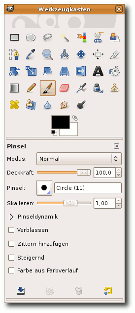
GIMPs Werkzeugkasten.
Der dritte Abschnitt beschäftigt sich mit den einzelnen GIMP-Menüs.
In den Menüs findet man sowohl alternative Zugangsmöglichkeiten
zu den einzelnen Werkzeugen, aber natürlich auch noch zahlreiche andere
Funktionen, die nicht im Werkzeugkasten zu finden sind. Zu erwähnen
sind
dabei sicherlich die beiden Menüs „Farben“ und „Filter“, die bei
der professionellen Bildbearbeitung eine sehr große und wichtige Rolle spielen. Dementsprechend komplex sind dort auch die Optionen der einzelnen Funktionen,
dafür aber auch extrem mächtig.
Im Buch geht Karsten Günther
ausführlich auf diese Menüs ein, auch wenn man sich bei den
Filtern eine bessere Erklärung gewünscht hätte. Hier findet man ab Seite
116 zu jedem Untermenü einen Absatz, der die jeweiligen Funktionen in
zwei bis drei Sätzen erklärt und gegebenenfalls auch Hinweise zu deren
Einsatz gibt. In manchen Fällen ist die Erklärung sehr knapp gehalten,
was teilweise aber auch verständlich ist, schließlich würde es wohl ein
zweites, eigenes Buch benötigen, die über 130 verschiedenen GIMP-Filter
ausführlich zu beschreiben.
Im vorletzten Abschnitt widmet sich Karsten Günther dann in kurzer Form
(im Vergleich zu den vorigen Kapiteln) dem Dockfenster. Es wird
erklärt, welche Funktionen man andocken kann und wie diese
arbeiten. So wird auf die Ebenen-, Kanal und Pfadverwaltung eingegangen,
ebenso wie auf die Farben, Pinsel und Muster.
Am Ende findet man einen Anhang, in dem unter anderem kurze Hinweise
gegeben werden, wenn GIMP nicht „richtig“ arbeitet. Danach findet man
auch noch die Parameter, mit denen man GIMP von der Kommandozeile
aus starten kann.
Eine besondere Stellung hat die neueste Version GIMP 2.6, auf die
im Buch durchgängig hingewiesen wird. So werden kleinere Unterschiede
zum Vorgänger 2.4 gezeigt, die auf Seite 150 auch noch einmal in einem
extra Abschnitt beschrieben sind.
Zielgruppe
An wen richtet sich das Buch letztendlich? Zuerst würde man
natürlich antworten: Vor allem an GIMP-Einsteiger. Die einzelnen
Funktionen werden sehr gut erklärt, sodass man schnell nachschlagen
kann, wenn man als Neuling vor dem GIMP-Fenstern sitzt und ein Icon
oder einen Menüeintrag nicht zuordnen kann oder wenn ein Werkzeug nicht
so arbeitet, wie man es sich vorgestellt hat.
Aber nicht nur Einsteiger, sondern auch fortgeschrittene GIMP-Nutzer,
die nicht jedes Menü auswendig oder von jeder Funktion die exakte
Verhaltensweise kennen, können „GIMP - kurz & gut“ als gutes
Nachschlagewerk nutzen.
Profis, die GIMP jahrelang einsetzen, kennen die Funktionen und
Menüeinträge sicherlich aus dem Effeff und werden eher wenig Neues
im Buch finden.
Kritik
„Gimp - kurz & gut“ ist ein Nachschlagewerk, kein Roman. Dementsprechend
trocken liest es sich auch. Als Gute-Nacht-Lektüre ist es daher sicherlich
nicht empfohlen, aber schließlich auch nicht gedacht.
Wichtig ist auch, dass nur Funktionen erklärt werden. Es wird also
gezeigt, was etwas macht, nicht wie man etwas macht. Zu einem
kleinen Teil erfüllt das Glossar am Ende des Buches diese Aufgabe etwas.
Anhand von Schlagworten wird erklärt, wie man diese umsetzen kann. Es
sind aber sehr wenige Beispiele, die so beschrieben sind. Mit dem Buch
lernt man also nur die einzelnen Werkzeuge GIMPs kennen, aber nicht
zwingend damit umzugehen.
Positiv erwähnen muss man die verschiedenen Querverweise, die sich durch das Buch ziehen. Egal, welche Seite man aufschlägt,
man findet Verweise auf ähnliche Funktionen oder weitere Informationen
im Buch. Daneben sind die einzelnen Absätze von extra „Hinweisen“
durchzogen, die zum einen das Lesen auflockern, zum anderen aber auch
kleine Tipps und Tricks zeigen, worauf man bei einem bestimmten
Werkzeug, das an dieser Stelle gerade behandelt wird, achten muss,
möchte man es korrekt einsetzen. Auch gibt es zahlreiche Links
auf externe Webseiten und Anleitungen, die den Umgang mit GIMP erklären.
Eine besondere Stellung nehmen noch die Plug-ins ein, die nicht zum
Standardrepertoire von GIMP gehören. Wichtige Plug-ins findet man
in grauem Text unter manchen Abschnitten mitsamt Links zu deren
Download.
Nun zu den Negativpunkten (wobei sich die Liste glücklicherweise in
Grenzen hält). Das Buch enthält ein paar - wenn auch sehr wenige -
Rechtschreib- und Layoutfehler. Die letzteren werden den meisten Lesern
aber sicherlich nicht auffallen.
An einigen Stellen merkt man leider, dass aufgrund des Layouts des
Buches Satzteile geändert oder gestrichen werden mussten. So findet man
auf Seite 103 den “Satz“ „Verlustfrei umkehrbar.“ Natürlich ist das
kein richtiger deutscher Satz, sondern nur ein Kommentar, den man am
Seitenrand erwartet hätte. Wäre der Absatz aber ein Wort länger, wäre
es auf der Seite eine Zeile mehr geworden und der restliche Text hätte sich
verschoben. Zugegeben: Das ist Jammern auf hohem Niveau.
Nicht gerade zur Spannung trägt auch der Copy & Paste-Text bei, vor allem
bei den Malwerkzeugen, die nun einmal relativ identische Optionen haben.
Es hätte wohl gereicht, wenn die gemeinsamen Optionen einmal am Anfang
erklärt worden wären und man dann später nur auf diesen Abschnitt
verweist.
Auch wenn Karsten Günther sehr ausführlich auf die GIMP-Werkzeuge und
-Funktionen eingeht, hätte er einige Dinge doch ausführlicher
betrachten können. So wird auf Seite 86 bei der Indizierung eines Bildes zur Option
„Internet-optimierte Palette verwenden“ nur gesagt, dass sich die Option
von selbst erklärt. Offen gestanden tut sie das nicht, zumal es darüber
die Option „Optimale Palette erzeugen“ gibt. Heißt das, dass „optimal“
(zu deutsch: es geht nicht besser) für das Internet doch nicht so
optimal ist? Ein zweites Beispiel findet sich auf Seite 89. Hier wird
auf die Skalierung eines Bildes eingegangen und dort auch in einem Satz
auf das Interpolationsverhalten. Leider wird nicht erklärt, was die
vier verschiedenen Auswahlmöglichkeiten „Keine“, „Linear“, „Kubisch“
und „Sinc (Lanczos3)“ auszeichnen. Wenn es egal wäre, gäbe es an der
Stelle keinen Auswahlbox.
Etwas optimistisch ist Karsten Günther auch mit seiner Aussage auf Seite
88, dass „hochwertige Drucke [...] etwa 150 ppi [erfordern].“ Die
meisten Profis werden hier sicherlich widersprechen, aber selbst
für private Fotoausdrucke sollte man keine Bilder unter 300 ppi
verwenden.
Tastenbindungen
Nun zum größten Kritikpunkt: Die Tastenkürzel im Buch. Tastenkürzel
bzw. Tastenbindungen sind extrem wichtig in GIMP, da man so sehr schnell
zu einzelnen Werkzeugen oder Funktionen schalten kann. Dementsprechend
hilfreich ist auch die Tabelle im Buch ab Seite 11, welche die
wichtigsten Tasten und deren Funktion samt Menüeintrag aufzeigt. (Eine Liste
der Tastenbindungen und Menüeinträge gibt es auch als praktischen DinA4-Ausdruck
bei O'Reilly [3].)
Aber gerade hier gibt es das größte Problem: Wieso hat sich Karsten Günther
für eine Mischung aus deutschem und englischen Tastaturlayout
entschieden? Und wieso weicht er von der Schreibweise in GIMP ab? Dies
mindert den Wiedererkennungswert, besonders für Einsteiger.
Was ist genau gemeint? Auf einer deutschen Tastatur findet man vor allem
für die Sondertasten deutsche Bezeichnungen. So heißt es „Strg“, „Entf“
oder „Ende“. Im Buch wird dies leider vermischt. So wird von „Ctrl“,
„Del“ oder „Return“ gesprochen, dann aber wieder von „Ende“ oder
„Bild Pfeil hoch“. Die Festlegung auf das deutsche Tastaturlayout
wäre sinnvoller gewesen. Im Text selbst beschreibt Karsten Günther
Funktionen dann zwar oft mit beiden Tasten (Seite 30: „[Ctrl] bzw. [Strg]
schaltet in den Bearbeitungsmodus, ...“), aber leider nicht immer.
Daneben wäre es natürlich auch sinnvoll gewesen, wenn in „GIMP -
kurz & gut“ die gleichen Bezeichnungen wie in GIMP selbst benutzt worden
wären. Sicherlich ist den meisten Lesern die Übertragung von
„[Ctrl]+[Shift]+[e]“
auf „[Strg]+[Umschalt]+[E]“ (GIMP-Bezeichnung) möglich, aber es ist unnötig.
An dem Beispiel sieht man auch bereits eine Besonderheit:
Buchstabentasten werden im Buch klein geschrieben. Es ist unklar wieso
(eine Vermutung ist, dass man so leichter „I“ (großes i) und „l“
(kleines L) auseinanderhalten kann), aber es führt dann zu Aussagen wie
„Das Werkzeug (Taste [O], also [Shift][o]) ...“ (Seite 27) und „Das
Pfadwerkzeug (Taste [B]) ...“ (Seite 30). Prinzipiell ist das okay, nur ist
im zweiten Satz nicht „[B]“, also „[Shift]+[b]“, gemeint, sondern es
ist ein Schreibfehler und muss nur „[b]“ lauten.
Extrem kritisch sind dann Kombinationen wie „[Ctrl]+[;]“ (Seite 69),
ganz einfach, weil es keine (einzelne) „;“-Taste auf der deutschen (!)
Tastatur gibt (auf der englisch dagegen schon). Gemeint war
„[Ctrl]+[Shift]+[,]“.
Insgesamt sorgt das für viel Verwirrung, auch beim Autor, denn es kommt
vor, dass falsche Tastenkürzel angegeben werden. So wird auf Seite 20
behauptet, man könnte mit „Strg“ + „C“ eine Auswahl invertieren (gemeint
war „Strg“ + „I“) und auf Seite 91 f. wird eine Ebene mit „Umschalt“ + „H“
verankert, anstatt korrekterweise mit „Strg“ + „H“.
Es ist zu hoffen, dass in einer zweiten Auflage die Tastenkürzel an
GIMP angepasst werden, sodass die Notation in Programm und Buch
einheitlich und im Buch selbst konsistent sind.
Fazit
Die aufgezählten Kritikpunkte sind aber nur Kleinigkeiten, das Buch ist
im Gesamten gesehen sehr empfehlenswert, da wirklich jeder Punkt in GIMP
beschrieben wird. Alles, was darüber hinaus geht,
werden Anfänger und
etwas fortgeschrittene GIMP-Nutzer für gewöhnlich erst einmal nicht brauchen.
Vor allem das sehr gute Preis/-Leistungsverhältnis empfiehlt den Kauf.
| Buchinformationen |
| Titel | GIMP - kurz & gut |
| Autor | Karsten Günther |
| Verlag | O'Reilly |
| Umfang | 191 Seiten |
| ISBN | 978-3-89721-553-5 |
| Preis | 9,90 € |
| |
Redaktioneller Hinweis: Wir bedanken uns beim O'Reilly-Verlag, der
uns dieses Rezensionsexemplar von „GIMP - kurz & gut“ zur Verfügung
gestellt hat.
Links
- http://www.gimp.org/
- http://www.freiesmagazin.de/freiesMagazin-2010-01
- http://www.oreilly.de/catalog/gimppgger/chapter/gimp2.6-sheet-landscape-A4.pdf
| Autoreninformation |
| Dominik Wagenführ
liest gerne und viel. Seine Arbeit bei freiesMagazin
erfordert auch die Bearbeitung von Bildern mithilfe von GIMP. Da kam
das Buch zur rechten Zeit.
|
| |
Diesen Artikel kommentieren
Zum Index
von Michael Niedermair
TITELLINK: Python - kurz |
gut
Python ist eine objektorientierte Programmiersprache
zum Schreiben von Skripten und Programmen. Dabei ist Python frei verfügbar
und auf vielen Plattformen nutzbar, einschließlich Linux, Unix, Windows
und Mac OS.
Das Buch „Python - kurz & gut“ ist eine kompakte Referenz aus dem O'Reilly-Verlag,
welches aus dem Englischen übersetzt worden ist und zum schnellen Nachschlagen
aller wichtigen Sprachmerkmale und Elemente von Python dient.
Was steht drin?
Das Buch ist in 27 Bereiche unterteilt, die jeweils auf die Besonderheiten der
unterschiedlichen Versionen (2.0 - 2.6 und 3.0) eingehen.
Es beginnt mit einer Einführung,
typografischen Konventionen und einer Beschreibung, wie die Codebeispiele
zu nutzen sind. Danach wird kurz auf die Kommandozeilenoptionen und
Umgebungsvariablen eingegangen.
Richtig los geht es dann mit der Beschreibung von Typen und Operatoren (6 Seiten)
und den besonderen eingebauten Typen (37 Seiten) wie Listen, Dictionaries,
Dateien usw. Sehr kurz wird dann auf Anweisungen und Syntax (2 Seiten) eingegangen,
dann folgen spezifische Anweisungen (27 Seiten) für Bedingungen, Schleifen,
Umgebungen etc. Die nächsten beiden Bereiche behandeln den
Namensraum (3 Seiten) und die OOP (3 Seiten). Die folgenden 46 Seiten beschäftigen
sich mit Operatorenüberladung, eingebauten Funktionen, Ausnahmen und den
eingebauten Attributen.
Im anschließenden großen Abschnitt (52 Seiten) wird auf einige Module wie zum Beispiel
sys, string, os und tkinter eingegangen.
Zum Schluss folgen noch fünf Seiten über die Eigenheiten von Python und einige
Tipps. Ein Index mit elf Seiten beendet dann das Buch.
Wie liest es sich?
Der Schreibstil des Autors, auch in der deutschen Übersetzung, ist für längeres
Lesen nicht geeignet, aber für ein Nachschlagewerk noch akzeptabel. Arbeitet man nur
mit der neuesten Pythonversion, muss man immer wieder im Buch springen, da die
Informationen für ältere Versionen nicht benötigt werden.
Der Index besteht aus Stichwörtern, Methoden-, Modul- und Paketnamen, wobei die
Kommandozeilenparameter dazwischen gemischt sind.
Die Beispiele sind sehr kurz gehalten und setzen voraus, dass man sich mit der
Materie bereits auskennt.
Kritik
Das Buch ist für Programmierer geeignet, die schon einen gewissen Kenntnisstand und
Erfahrung mit Python haben, wenn sie das eine oder andere nachschlagen wollen.
Anfängern dagegen dürfte es schwer fallen, den für ihr jeweiliges Problem
passenden Bereich im Buch zu finden. Der Index ist dabei nicht immer hilfreich.
Das Buch ist nicht dafür geeignet, Python zu lernen!
Es wäre nützlich, wenn es getrennte Indizes für Stichwörter, Funktionen etc. geben
würde. Die Auswahl an beschriebenen Modulen und deren Funktion ist auf ein Minimum
beschränkt. Ein aktiver Programmierer würde sich hier ein paar Module mehr wünschen.
Die Beispiele könnten aussagekräftiger sein. Es steckt selbst bei der vierten Auflage
noch Entwicklungspotenzial im Buch.
Ob die 12,90 € für das Nachschlagewerk sinnvoll angelegt sind oder man
beim Programmieren am Rechner doch lieber die kostenlose Onlinehilfe bzw. das Onlinetutorial
verwendet, in denen man schnell nach Stichwörtern suchen kann, muss jeder für sich
selbst entscheiden.
| Buchinformationen |
| Titel | Python - kurz & gut, 4. Auflage |
| Autor | Mark Lutz, Übersetzung: Lars Schulten |
| Verlag | O'Reilly |
| Umfang | 206 Seiten |
| ISBN | 978-3-89721-556-6 |
| Preis | 12,90 € |
| |
| Autoreninformation |
| Michael Niedermair
ist Lehrer an der Münchner IT-Schule und unterrichtet Programmierung,
Datenbanken, IT-Technik und Linux. Nebenbei schreibt und liest er viel. |
| |
Diesen Artikel kommentieren
Zum Index
Für Leserbriefe steht unsere E-Mailadresse
zur Verfügung - wir freuen uns über Lob,
Kritik und Anregungen zum Magazin.
An dieser Stelle möchten wir alle Leser ausdrücklich ermuntern,
uns auch zu schreiben, was nicht so gut gefällt. Wir bekommen
sehr viel Lob (was uns natürlich freut), aber vor allem durch
Kritik und neue Ideen können wir uns verbessern.
Leserbriefe und Anmerkungen
BackupPC
->
Im Artikel [„BackupPC als Backupserver im Heimnetzwerk“, freiesMagazin
02/2010 [1]]
wurde noch vergessen, darauf hinzuweisen, dass man bei Windows-Clients
u. U. die Firewall entsprechend konfigurieren muss, damit man auf
die Admin-Freigabe c$ zugreifen darf.
Gast (Kommentar)
->
Schöner Artikel über eine Backup-SW, die ich noch nicht kannte. Habe
selbst schon eine Weile nach Backup-SW gesucht, die mir optimal für ein
„Heimbackup“ erscheint, aber das Optimum gibt es wohl nicht.
Bei der BackupPC-Lösung konnte ich leider nicht entdecken, ob eine
„Versionierung“ via Datum des Backups o. Ä. unterstützt wird.
Außerdem erscheint es mir (fehlerträchtigem) User nicht gut, dass eine
Backup-SW etwas vom Zielverzeichnis löschen kann ... (Man stelle sich
vor, Quelle und Ziel zu vertauschen.)
Hier habe ich ein wirklich feines Stück Software entdeckt:
StoreBackup [2]. Das Tool kann fast alles,
was ich mir wünsche, hat nur leider keine grafische Bedienoberfläche.
Z. B. ein paar Features:
- Übertragung komprimiert
- erzeugt Versionen automatisch (Datum/Zeit)
- identische Files werden über Hardlinks gespeichert
- unterteilt große Dateien in Schnipsel, die einzeln auf Änderungen
untersucht und gespeichert werden (z. B. Virtuelle Maschinen ändern
sich kaum)
- einstellbare Strategie, nach der alte Backups gelöscht werden
Man kann als Medium natürlich auch eine verschlüsselte Platte nehmen.
Nachteil für mich ist, dass es keine GUI gibt.
Vielleicht ist es ja mal für den einen oder anderen einer näheren
Betrachtung wert.
Gast (Kommentar)
<-
Vielen Dank für den Hinweis auf StoreBackup. Die Software klingt
definitiv interessant und vielleicht findet sich ja auch ein Autor,
der die Software in freiesMagazin einmal vorstellen möchte.
Dominik Wagenführ
openSUSE-Distribution
->
Ich las gerade den Artikel zur openSUSE 11.2, der mir inhaltlich sehr
gefallen hat. Die Version 11.2 war allerdings die erste Distribution,
die von der Firma open-slx [3] vertrieben wurde.
Die neu gegründete Firma hat im Rahmen von Novells Outsourcing die
Produktion und den Vertrieb, wie auch den Installationssupport übernommen.
Sascha Manns
ZFS unter Linux
->
Interessanter Beitrag, allerdings sind die Beispiele zu raidz2
und raidz3 meiner Meinung nach unsinnig, da zu wenige Platten
angegeben sind. So wie ich das verstanden habe, macht RAID6
(doppelte Parity) erst ab vier Platten Sinn und RAID7 (dreifach Parity),
oder wie man das nennen mag, erst ab 5 Platten. Wobei das ja schon
Overkill ist: mehr Parity als Daten. :)
Robert Perkuhn (Kommentar)
<-
Es stimmt, leider habe ich die Beispiele
nicht richtig aus meinen Testprotokollen kopiert. Bei raidz2 und raidz3
benötigt man im Prinzip 5 bzw. 8 Platten.
Martin Böcher
Korrekturen und Ergänzungen
Artikel „Machinarium - In der Welt der Maschinen“, freiesMagazin 01/2010 [2]
Wie uns unser Leser Erik Pfannenstein darauf hinwies (Kommentar), hat der angeblich
namenslose Roboter aus „Machinarium“ tatsächlich einen Namen. Er heißt
Josef, wie man auch im offiziellen Forum nachlesen kann [4].
Korrektur „Shebang - All der Kram“, freiesMagazin 01/2010 [5]
Eine Korrektur zur Korrektur ist auch eher selten, aber kommt
dank des Hinweises von Andreas Klein auch einmal vor.
Natürlich ist es schön zu wissen, dass
nicht dasselbe wie
tut, aber ohne eigentliche Problemlösung bringt dies nicht viel,
denn die Verarbeitung der Leerzeichen ist problematisch.
Lösen kann man das Ganze, indem man solche in der Shell verarbeiteten
Ausdrücke in Anführungszeichen setzt:
Dann machen auch (mehrfache) Leerzeichen keine Probleme mehr.
Links
- http://www.open-slx.de
- http://www.freiesmagazin.de/freiesMagazin-2010-02
- http://storebackup.org/
- http://www.freiesmagazin.de/freiesMagazin-2010-01
- http://machinarium.net/forum/index.php?topic=651.0
Die Redaktion behält sich vor, Leserbriefe gegebenenfalls zu
kürzen. Redaktionelle Ergänzungen finden sich in eckigen Klammern.
Die Leserbriefe kommentieren
Zum Index
(Alle Angaben ohne Gewähr!)
Sie kennen eine Linux-Messe, welche noch nicht auf der Liste zu
finden ist? Dann schreiben Sie eine E-Mail mit den Informationen zu
Datum und Ort an .
Zum Index
freiesMagazin erscheint immer am ersten Sonntag eines Monats. Die April-Ausgabe wird voraussichtlich am 1. April unter anderem mit folgenden Themen veröffentlicht:
- LinuxAdvanced USB-Edition aus Österreich
- Debian Testing „squeeze“
- Eine Einführung in Tcl
Es kann leider vorkommen, dass wir aus internen Gründen angekündigte Artikel verschieben müssen. Wir bitten dafür um Verständnis.
Zum Index
|
| Erscheinungsdatum: 7. März 2010 |
|
|
| Redaktion |
| Dominik Honnef | Thorsten Schmidt |
| Dominik Wagenführ (Verantwortlicher Redakteur) |
| |
| Satz und Layout |
| Ralf Damaschke | Yannic Haupenthal |
| Michael Niedermair | |
| |
| Korrektur |
| Daniel Braun | Frank Brungräber |
| Stefan Fangmeier | Mathias Menzer |
| Karsten Schuldt | |
| |
| Veranstaltungen |
| Ronny Fischer |
| |
| Logo-Design |
| Arne Weinberg (GNU FDL) |
| |
Dieses Magazin wurde mit LaTeX erstellt. Mit vollem Namen
gekennzeichnete Beiträge geben nicht notwendigerweise die Meinung
der Redaktion wieder. Wenn Sie freiesMagazin ausdrucken möchten, dann
denken Sie bitte an die Umwelt und drucken Sie nur im Notfall. Die
Bäume werden es Ihnen danken. ;-)
Soweit nicht anders angegeben, stehen alle Artikel und Beiträge in
freiesMagazin unter der GNU-Lizenz für freie Dokumentation (FDL). Das Copyright liegt
beim jeweiligen Autor. freiesMagazin unterliegt als Gesamtwerk ebenso
der GNU-Lizenz für freie Dokumentation (FDL) mit Ausnahme von
Beiträgen, die unter einer anderen Lizenz hierin veröffentlicht
werden. Das Copyright liegt bei Dominik Wagenführ. Es wird die
Erlaubnis gewährt, das Werk/die Werke (ohne unveränderliche
Abschnitte, ohne vordere und ohne hintere Umschlagtexte) unter den
Bestimmungen der GNU Free Documentation License, Version 1.2 oder
jeder späteren Version, veröffentlicht von der Free Software
Foundation, zu kopieren, zu verteilen und/oder zu modifizieren.
Die xkcd-Comics stehen separat unter der Creative-Commons-Lizenz CC-BY-NC 2.5. Das Copyright liegt
bei Randall Munroe.
Zum Index
File translated from
TEX
by
TTH,
version 3.85.
On 7 Mar 2010, 14:16.
|